CRONACHE & DADI
CRONACHE & DADI
[ONE-SHOT FANTASY OSCURO]
🎧 Accendi l'atmosfera...
Aetheria si presenta come una città protetta da mura antiche e torri slanciate che si stagliano contro un cielo pallido. Le strade lastricate sono illuminate da lanterne ambrate,
le botteghe espongono merci sui banchi di legno e dalle finestre socchiuse filtrano voci, risate e il profumo di pane appena sfornato. Il fumo sale lentamente dai camini, mentre l'eco dei passi
rimbalza tra vicoli stretti e piazze lastricate. A prima vista, sembra che nulla sia cambiato da quando la città è scomparsa dalle mappe.
Eppure, dietro questa apparente normalità, qualcosa non torna. Gli abitanti evitano di parlare del passato, i ritratti raffigurano volti cancellati e nessuna casa custodisce uno specchio.
Sulle lapidi non compaiono nomi, ma descrizioni di ricordi perduti. Talvolta, dietro una finestra illuminata,
si scorge una figura immobile che osserva i passanti. Con il calare della notte, la città rivela il suo volto più inquietante. Le lanterne tremolano anche in assenza di vento,
le ombre si allungano nella direzione sbagliata. In alcuni quartieri, le campane suonano senza che nessuno abbia tirato le corde; in altri, le finestre si illuminano una dopo l'altra,
come se qualcosa si stesse svegliando all'interno delle case. Aetheria non è una città abbandonata, né una città davvero viva.
È una prigione costruita per contenere qualcosa che non avrebbe mai dovuto attraversare il confine. E mentre gli abitanti continuano a
recitare la loro quotidianità, fingendo che nulla sia accaduto, le fondamenta che tengono separati i due mondi stanno cedendo.
La regione che circonda Aetheria sembra dimenticata dal mondo. Distese di pietra arida si alternano a campi d'erba ingiallita. Le vecchie strade, un tempo percorse da mercanti e avventurieri, si perdono tra le rovine di torri di guardia e villaggi abbandonati, inghiottiti da una vegetazione contorta. Qui il vento soffia senza portare con sé il canto degli uccelli, e persino i rumori più familiari sembrano attutiti, come se la terra stessa trattenesse il respiro. Alla fine di uno di questi sentieri sorge il confine: un imponente portale di pietra, inciso da migliaia di nomi appartenuti a persone vissute in epoche diverse. Alcune iscrizioni sono consumate dal tempo, altre appaiono fresche, come se fossero state scolpite pochi istanti prima. Nessuna mappa indica la sua posizione e nessuna cronaca ne riporta l'esistenza. Eppure, ogni cento anni, la strada che conduce al portale ricompare, aprendo un passaggio verso una città che il mondo crede scomparsa da secoli. Oltre quella soglia si trova Aetheria: un luogo sospeso tra realtà e leggenda, dove il tempo sembra aver seguito regole proprie e il passato non è mai davvero scomparso.
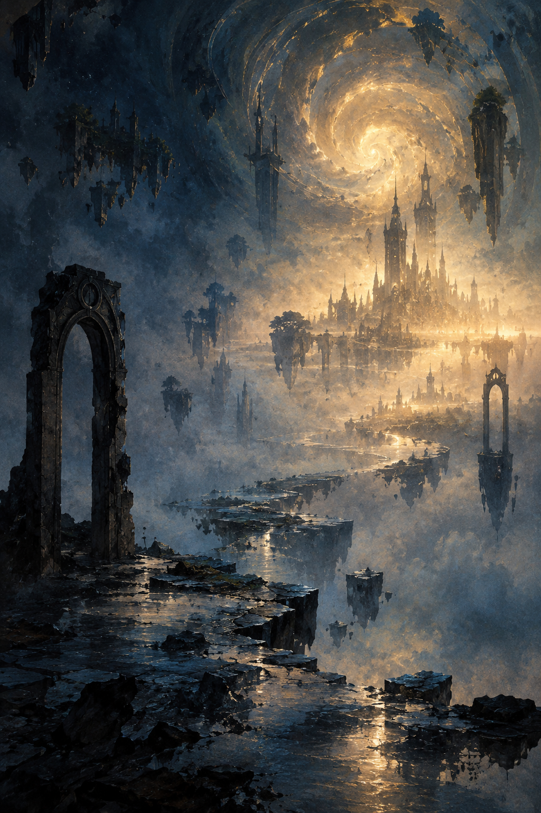
Duecento anni prima, Aetheria era una città-stato all'avanguardia. I suoi studiosi avevano scoperto come attraversare il confine tra il mondo conosciuto e un luogo che chiamavano l'Oltre,
una dimensione misteriosa, separata dalla realtà, nella quale le possibilità, i desideri e i ricordi sembravano poter assumere forme concrete.
Attraverso di esso, gli studiosi speravano di recuperare conoscenze perdute, comprendere ciò che sfuggiva alla loro comprensione e superare i limiti imposti dalla natura. La città prosperò grazie
alle nuove scoperte, mentre i suoi abitanti cominciarono a credere che ogni limite fosse soltanto un ostacolo da superare. Poi arrivò il primo errore.
Gli studiosi tentarono di dare forma a una realtà ideale, un luogo privo di sofferenza, morte e conflitti, nel quale ogni desiderio potesse trovare compimento. Ma qualcosa rispose alla loro chiamata.
Una presenza proveniente dall'Oltre. La chiamarono il “Secondo Popolo.”
Inizialmente si manifestò attraverso immagini, voci e figure che ricordavano persone scomparse, familiari morti e persino bambini mai nati. Quelle presenze conoscevano ricordi e desideri dei loro interlocutori, ma dietro le loro sembianze si nascondeva qualcosa di profondamente estraneo. Non comprendevano davvero il valore dei legami, della perdita o dell'identità. Erano imitazioni incomplete di ciò che gli esseri umani erano, capaci di utilizzare i loro ricordi senza comprenderne il significato. Quando gli studiosi capirono che il Secondo Popolo stava cercando di oltrepassare il confine e raggiungere il mondo conosciuto, era ormai troppo tardi. L'influenza dell'Oltreaveva già contaminato interi quartieri e la separazione tra le due realtà stava cedendo. Una parte degli studiosi riuscì a chiudere il passaggio, ma non poté distruggere ciò che si trovava dall'altra parte. Scelse quindi di isolare Aetheria dal mondo e trasformare la città stessa in una prigione, costruendo un sistema di contenimento destinato a impedire al Secondo Popolo di raggiungere la realtà conosciuta. Il confine non è una semplice barriera. Il Sigillo è un sistema complesso, legato alla città, ai suoi abitanti e alle loro identità. Nomi, ricordi, desideri ed esperienze contribuiscono a mantenere stabile la separazione tra i due mondi. Aetheria divenne così parte integrante della prigione che avrebbe dovuto proteggere il resto del mondo. Ma il sistema non è eterno. Con il passare del tempo, gli abitanti hanno cominciato a perdere i propri ricordi. Inizialmente si trattava di piccole dimenticanze: nomi di persone, eventi lontani, frammenti della propria storia. Col tempo, però, la perdita è diventata sempre più profonda. Alcuni hanno dimenticato il proprio passato, altri hanno smesso di riconoscere i propri cari. Quando un individuo perde completamente la propria identità, ciò che rimane non è più una persona: diventa un “Senzaeco”.
Oggi gli abitanti di Aetheria vivono in una società apparentemente normale, ma nessuno ricorda con precisione le origini della città o il motivo per cui non sia possibile lasciarla. Il sistema sta cedendo. Il Secondo Popolo sta sfruttando la perdita dei ricordi e delle identità per indebolire il Sigillo dall'interno. Le crepe che si stanno formando nella barriera minacciano di compromettere definitivamente la separazione tra Aetheria e l'Oltre. E non è la prima volta che qualcuno cerca di comprendere ciò che sta accadendo. Una spedizione proveniente dal mondo esterno ha già attraversato il confine, esplorato la città e raggiunto il cuore del sistema di contenimento. I suoi membri hanno scoperto la verità su Aetheria e sul Secondo Popolo, ma non sono riusciti a trovare un modo per fermare il deterioramento del Sigillo.
I personaggi arrivano ad Aetheria per ragioni che possono variare in base alla storia che il Master desidera raccontare e al tipo di gruppo che vuole portare al tavolo. Potrebbero far parte di una spedizione di ricerca incaricata di esplorare le rovine di una città scomparsa, essere studiosi, archeologi o esploratori interessati a un'antica civiltà di cui si sono perse le tracce. Potrebbero essere stati assunti da un'organizzazione, inviati da un'istituzione accademica oppure aver raggiunto il luogo seguendo documenti, mappe e testimonianze raccolte durante le proprie ricerche. In alternativa, il gruppo potrebbe essere composto da viaggiatori, avventurieri o individui con motivazioni personali, accomunati da circostanze che li hanno condotti fino al misterioso portale. Non è necessario stabilire fin dall'inizio un legame particolare tra i personaggi e Aetheria. Ciò che conta è fornire loro una ragione credibile per raggiungere il confine e attraversarlo, lasciando che siano gli eventi della storia a rivelare gradualmente la vera natura del loro rapporto con la città.
Questa sezione contiene una rivelazione fondamentale per la gestione dell'avventura. Si consiglia al Master di leggerla prima di preparare la sessione.
La verità sulla spedizione
La spedizione che i personaggi scopriranno durante l'esplorazione di Aetheria era composta proprio da loro. In un precedente passaggio
attraverso il portale, i personaggi avevano già raggiunto la città e iniziato a indagare sulla sua natura. Durante quella permanenza,
l'influenza dell'Oltre aveva progressivamente consumato i loro ricordi e alterato la percezione della loro identità. Le circostanze
della loro precedente esperienza rimangono volutamente poco chiare. I personaggi non ricordano di essere già stati ad Aetheria e non
conoscono le ragioni del loro ritorno.
Nel corso dell'avventura, il Master troverà diversi indizi che suggeriscono questa connessione: nomi presenti nei registri, oggetti personali, annotazioni e documenti lasciati nella vecchia sede della spedizione. Non rivelare direttamente la verità ai giocatori. Lascia che siano loro a ricostruirla attraverso le scoperte e le coincidenze incontrate durante l'esplorazione.
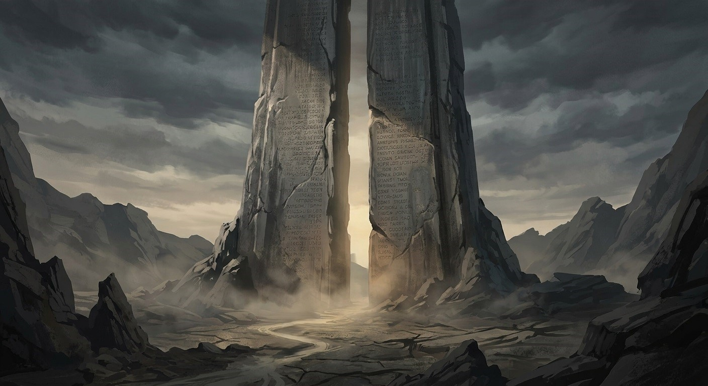
La strada termina dove non dovrebbe esserci nulla. Per tre giorni avete attraversato una distesa di pietra, erba secca e alberi contorti. Nessuna casa, nessun sentiero secondario, nessun segno di vita. Eppure, davanti a voi, si erge un portale monumentale, alto fino a sfiorare il cielo e a scomparire tra le nubi sopra di esso, scolpito nella pietra. Sulla sua superficie sono incisi migliaia di nomi. Alcuni sono consumati dal tempo, altri sembrano appena scolpiti. L'aria oltre il portale è limpida, quasi luminosa, ma non riuscite a distinguere ciò che si trova dall'altra parte. Ai piedi della struttura giace un cavallo morto. La sella è ancora calda. Accanto all'animale, qualcuno ha inciso sulla pietra una frase: “Se siete arrivati fin qui, non fidatevi di chi vi riconoscerà”
Il portale non ha serrature. Quando un personaggio si avvicina, le incisioni sulla pietra cominciano a illuminarsi.
Tra i nomi compaiono anche quelle dei personaggi, disposti in modo casuale.
Le due lastre si separano senza rumore, rivelando un paesaggio sorprendente: oltre il portale si estende una pianura
verdeggiante, attraversata da un'antica strada lastricata. In lontananza, torri e mura si stagliano contro un cielo dorato.
L'erba ondeggia dolcemente al vento e la luce avvolge la valle in un'atmosfera quasi irreale.
Quando il gruppo attraversa il portale, tuttavia, qualcosa cambia. La luce si fa più spenta e l'aria più secca.
Se i personaggi si voltano, il portale è già scomparso: alle loro spalle si trova soltanto una parete rocciosa, priva di qualsiasi apertura.
Il passaggio può essere riaperto dall'interno. Tuttavia, per farlo dovranno trovare il meccanismo che lo governa.
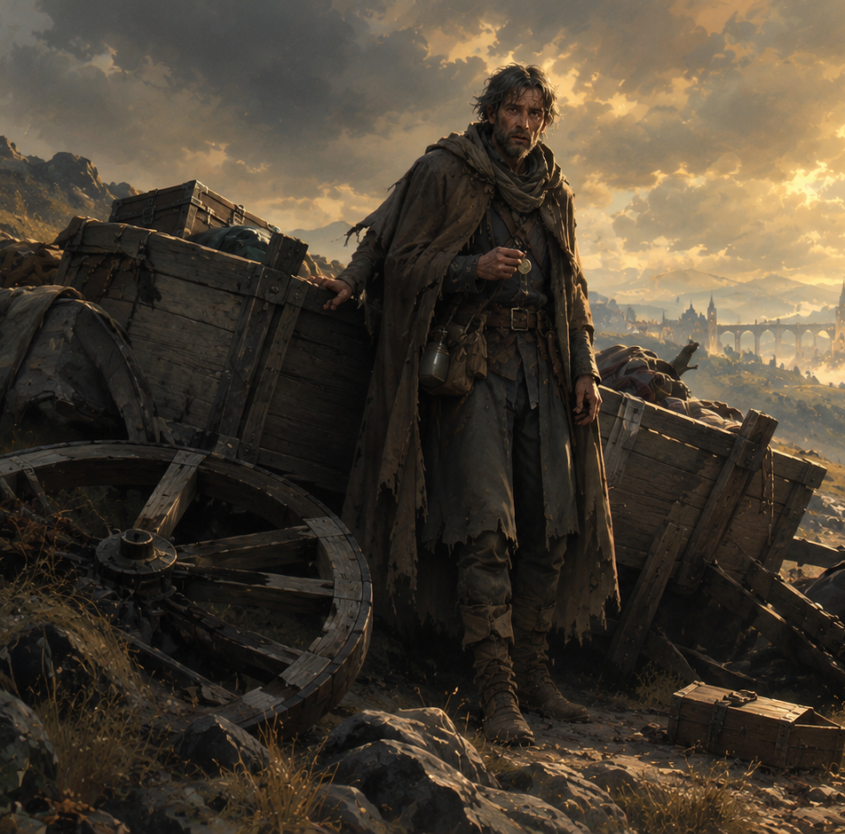
La strada si snoda attraverso una distesa di pietra grigia, punteggiata da ciuffi d'erba ingiallita. Il terreno è secco e screpolato in più punti, mentre il vento trascina sottili veli di polvere lungo il sentiero. L'aria ha un odore arido, quasi stantio, e il paesaggio sembra aver perso ogni traccia della rigogliosa pianura che avevate intravisto dall'altra parte del portale. In lontananza, le mura di Aetheria si stagliano contro il cielo, velate da una foschia dorata. La città sembra ancora luminosa e magnifica, ma qualcosa, in quel paesaggio spoglio e silenzioso, stona con la bellezza che vi aveva accolti poco prima.
Dopo una curva, scorgete un piccolo carro fermo sul ciglio della strada. Una delle ruote è spezzata e il cassone, inclinato su un fianco, è colmo di coperte logore, sacchi e vecchi utensili. Accanto, un cavallo giace riverso immobile. Il suo corpo è rigido e il manto impolverato; non sembra essere morto da pochi istanti. Accanto al carro, un uomo cerca di sistemare una cinghia spezzata. Indossa abiti consunti, un mantello rattoppato in più punti e stivali talmente usurati da sembrare sul punto di disfarsi. Ha il volto scavato, la barba incolta e gli occhi stanchi.
Quando vi sente arrivare, si volta lentamente. “Ah… viaggiatori.” Vi osserva con un'espressione indecifrabile, quasi sorpresa di incontrare qualcuno. “Non se ne vedono molti, da queste parti. O forse sono io che non incontro nessuno da parecchio tempo.” L'uomo accenna un sorriso stanco, poi guarda il cavallo. “Credo che questa volta non si rialzerà. Povera bestia. Mi ha accompagnato per anni, sapete? Non ricordo nemmeno più dove l'ho trovata.” Si passa una mano sul volto e rimane in silenzio per qualche istante. “Sto cercando l'uscita. Da quanto tempo? Dieci anni, forse venti. È difficile dirlo. Qui le giornate si somigliano tutte, e a volte ho l'impressione di aver già percorso la stessa strada centinaia di volte. Indica il sentiero alle vostre spalle. “Sono venuto da quella direzione, ne sono quasi certo. O forse era dall'altra parte. Ricordo una porta… una grande porta di pietra. Ero sicuro che, attraversandola, sarei tornato a casa.” Il suo sorriso si spegne. “Ma non riesco più a ricordare dove sia, casa mia.”
Per un momento sembra dimenticarsi della vostra presenza. Il suo sguardo si perde oltre le colline, mentre le dita cominciano a muoversi nervosamente, come se stessero cercando qualcosa che non c'è. “C'era una donna, sapete? Aveva i capelli scuri e rideva quando mi arrabbiavo. Diceva che non ero capace di restare serio per più di cinque minuti.” L'uomo lascia sfuggire una risata sommessa. Per un istante, il suo volto si illumina di una tenerezza autentica. “Avevamo una casa. Piccola, ma con un giardino. Ricordo una finestra che non si chiudeva mai bene e il rumore della pioggia sul tetto. E un bambino…” Si interrompe. La risata muore sulle sue labbra. “Un bambino, sì. Credo fosse nostro figlio. Non ricordo il suo nome.” Abbassa lo sguardo sulle proprie mani, rigirandole lentamente. Il silenzio si allunga. Quando riprende a parlare, la sua voce è diventata più bassa. “All'inizio pensavo fossero sogni. Mi svegliavo e ricordavo una voce, un volto, una stanza piena di luce. Poi quei ricordi hanno cominciato a svanire. Prima i dettagli, poi i volti. Adesso mi resta soltanto la sensazione di aver perso qualcosa di importante.” Vi guarda uno alla volta stringendosi nel mantello logoro che indossa. “A volte mi domando se quelle persone siano mai esistite. Altre volte penso che siano ancora là fuori, ad aspettarmi. E allora riprendo a camminare.”
Indica le mura lontane di Aetheria. “Non fidatevi troppo di quel posto. È bello, vero? Le prime volte che l'ho visto pensavo fosse la cosa più meravigliosa del mondo. Poi ho cominciato a notare che certe strade mi riportavano sempre nello stesso punto. Che alcune persone mi salutavano chiamandomi con nomi che non avevo mai sentito. E che, ogni tanto, qualcuno mi guardava come se mi conoscesse da sempre.” Per alcuni istanti vi osserva con crescente inquietudine. Il suo sguardo passa da un volto all'altro, indugiando sui vostri occhi, sulle vostre mani, sui piccoli particolari che distinguono una persona da tutte le altre. “Scusatemi. Non avrei dovuto raccontarvi queste cose.” Fa un passo verso di voi. “ È soltanto che… da molto tempo non incontro qualcuno con cui parlare. E ho paura di dimenticare anche il suono della mia voce.”
Qualcosa scivola fuori da una tasca del mantello e cade sulla terra battuta, sollevando appena un piccolo sbuffo di polvere. È un medaglione d'argento, consumato dal tempo, con la superficie graffiata e il bordo annerito. Rimane a terra, poco distante dai vostri piedi, mentre l'uomo si volta a fissare le mura di Aetheria, senza accorgersi di averlo perso.
Identità e origine
Il viandante è un uomo che, molti anni prima, ha attraversato il portale di Aetheria. Come molti altri prima di lui,
è rimasto intrappolato oltre il confine. Inizialmente ha cercato una
via d'uscita, percorrendo più volte le strade che attraversano la regione. Con il trascorrere del tempo, però, ha cominciato a
perdere la cognizione dei giorni, dei luoghi e, infine, della propria identità. Non si tratta di una semplice perdita di memoria.
La sua permanenza ad Aetheria lo ha esposto all'influenza dell'Oltre, una realtà che altera ciò che gli esseri umani ricordano,
desiderano e credono di essere. Il Secondo Popolo si alimenta delle memorie, delle identità e dei desideri di chi entra in
contatto con l'Oltre. Le persone che vengono progressivamente svuotate di ciò che le rende umane possono trasformarsi in Senzaeco:
esseri che conservano frammenti di personalità e comportamenti umani, ma non possiedono più un'identità stabile. Il viandante si trova
ormai nelle fasi avanzate di questo processo. Non ricorda il proprio nome, non sa da quanto tempo vaghi e non riesce più a distinguere
i ricordi autentici dai sogni e dalle immagini che riaffiorano casualmente nella sua mente.
Del suo passato gli rimangono soltanto poche immagini: una donna dai capelli scuri, una piccola casa con un giardino, il rumore della pioggia sul tetto e la voce di un bambino che potrebbe essere stato suo figlio. Non sa se queste persone siano mai esistite davvero. A volte è convinto di aver avuto una famiglia; altre volte teme di aver inventato tutto. I ricordi riaffiorano con una forza emotiva che non riesce a spiegare, ma si dissolvono ogni volta che cerca di ricostruirli.
Il carro e il cavallo
Il carro e il cavallo morto sono gli ultimi resti della sua esistenza materiale. Il cavallo lo ha accompagnato per un tempo che non è più in grado di quantificare.
Non ricorda dove lo abbia trovato né quando abbia cominciato a viaggiare con lui. La sua morte rappresenta un'ulteriore perdita,
ma il viandante non riesce più a comprenderne appieno il significato. Il carro contiene coperte, sacchi e utensili accumulati
durante il viaggio. Non custodisce necessariamente oggetti importanti, ma il Master può inserirvi piccoli elementi che
suggeriscano la durata della sua permanenza: provviste ormai inutilizzabili, mappe piene di annotazioni contraddittorie o
appunti che ripetono più volte la stessa frase.
Comportamento
Quando incontra i personaggi, il viandante non li aggredisce immediatamente. È stanco, confuso e sinceramente sollevato di poter
parlare con qualcuno.
Le sue parole sono sincere, anche se non è più in grado di distinguere con certezza ciò che ricorda da ciò che immagina.
Durante la conversazione, il Master può introdurre piccoli segnali del deterioramento della sua identità: Il viandante ripete una
frase pronunciata poco prima, senza accorgersene; si interrompe a metà di un racconto perché dimentica ciò che stava dicendo; guarda
uno dei personaggi come se lo riconoscesse, per poi negare di averlo mai incontrato; quando parla della propria famiglia,
il suo volto mostra un'emozione autentica che scompare improvvisamente, lasciando spazio a un'espressione vuota.
Il medaglione
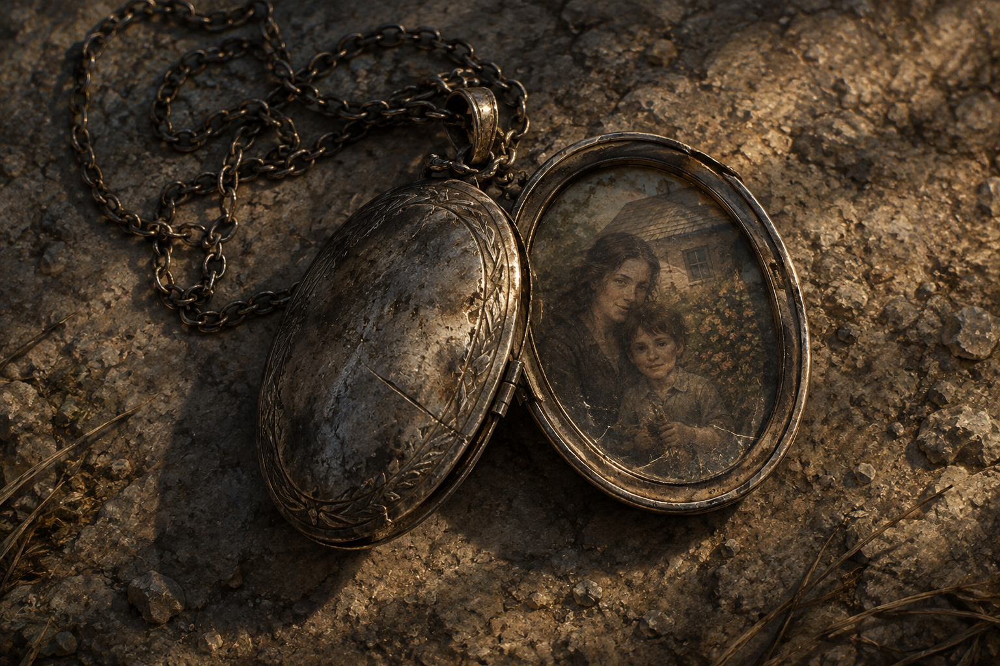
Durante la conversazione, il medaglione scivola dalla tasca del mantello e cade sulla strada. Il viandante non se ne accorge. Se i personaggi lo raccolgono, possono esaminarlo senza che lui reagisca immediatamente. Se glielo restituiscono, l'uomo potrebbe riconoscerlo come qualcosa di importante senza riuscire a spiegare perché. Il medaglione è il suo ultimo punto di contatto con un'identità precedente.Quando avviene la trasformazione
La trasformazione non deve essere automatica. La sua comparsa dipende dalle azioni dei personaggi e dall'evoluzione dell'incontro.
Il viandante può cominciare a perdere il controllo quando viene minacciato, aggredito, trattenuto con la forza o sottoposto a una pressione
che risveglia violentemente i frammenti della sua identità. Anche una conversazione prolungata può far emergere il problema,
soprattutto se i personaggi insistono nel fargli ricordare dettagli del passato che non riesce più a recuperare. La presenza dei personaggi
risveglia infatti emozioni e ricordi intensi. Il Senzaeco percepisce in loro qualcosa che non possiede più: identità ancora integre,
ricordi vivi e legami personali. Incapace di comprendere questa sensazione, sviluppa un impulso crescente ad appropriarsene.
La trasformazione avviene quando tale impulso prevale sui residui della sua volontà umana. Durante questa, lascia ai personaggi
la possibilità di reagire.
Combattimento (opzionale)
Una volta trasformato, il viandante non combatte per vendetta né per sadismo. È guidato da un bisogno disperato e ormai incontrollabile:
appropriarsi delle memorie e delle identità dei personaggi per colmare il vuoto che lo divora. Il suo comportamento è frammentario.
Alterna movimenti rapidi e innaturali a momenti di esitazione.
Statistiche “Senzaeco”
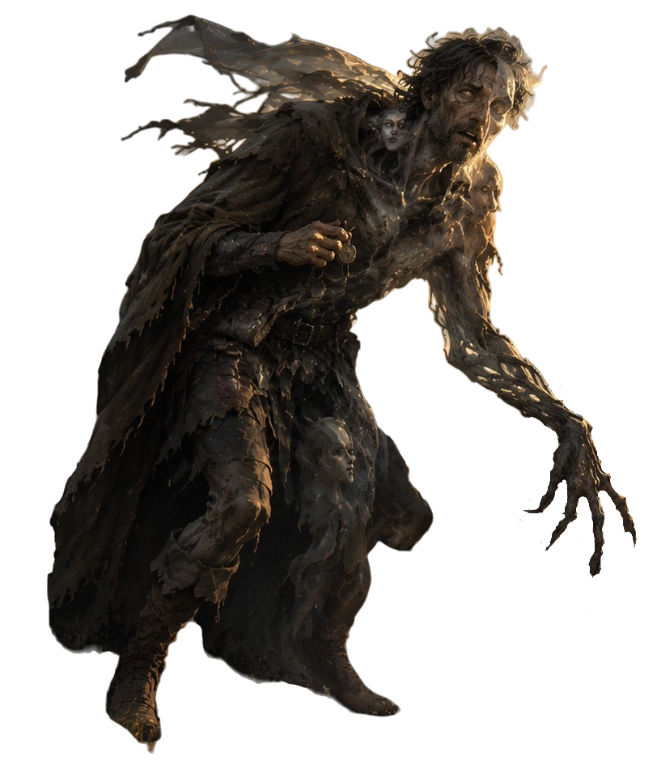
Resistenza: Media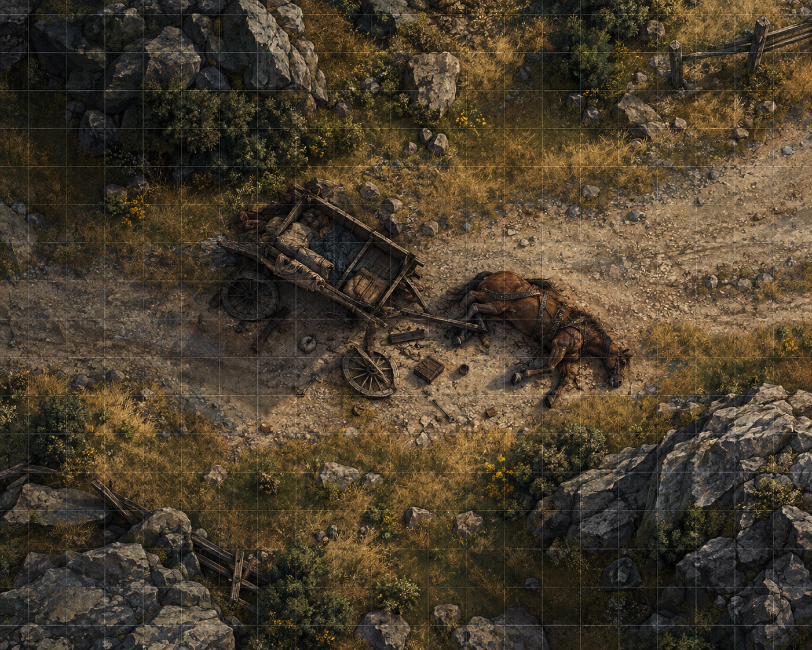
Mappa combattimento
Esiti
Se i personaggi lo sconfiggono: la creatura perde progressivamente consistenza e i filamenti si ritirano.
Il corpo può dissolversi, lasciando soltanto residui scuri e il medaglione.
Se i personaggi riescono a calmarlo: grazie al medaglione o a un'altra azione significativa, il Senzaeco
recupera per un breve momento la lucidità. Può riconoscere l'oggetto, ricordare una sensazione legata alla propria famiglia
oppure pronunciare poche parole sconnesse. Questo momento può consentire ai personaggi di interrompere il combattimento,
ma non annulla la trasformazione.
Se i personaggi fuggono: il Senzaeco può inseguirli per un breve tratto, attirato dalle loro memorie,
per poi fermarsi o tornare al carro. La sua priorità non è necessariamente ucciderli: è raggiungere ciò che percepisce
come una fonte di ricordi.
INFO DA MANTENERE SEGRETE
I personaggi non devono sapere subito che il viandante appartiene al Secondo Popolo. Durante il primo incontro possono
soltanto sospettare che sia vittima di qualcosa che agisce sulla memoria e sull'identità. Anche la natura del medaglione deve
rimanere ambigua. Non è ancora certo se la donna e il bambino siano realmente appartenuti al passato del viandante o se siano
immagini provenienti da memorie assorbite. L'obiettivo della scena è far comprendere ai personaggi che Aetheria
non altera soltanto il paesaggio, ma può cambiare ciò che una persona ricorda di sé, fino a privarla della propria identità.
La strada prosegue ancora per qualche tempo attraverso il paesaggio arido. Sotto il cielo dorato, le mura di Aetheria diventano sempre
più imponenti, fino a occupare quasi interamente il vostro orizzonte. Le torri si innalzano sopra i bastioni di pietra chiara,
mentre guglie, tetti spioventi e cupole emergono dalla foschia che avvolge la città.
Man mano che vi avvicinate, il silenzio della pianura lascia spazio a suoni sempre più distinti: il rumore di ruote sul selciato,
voci lontane, il tintinnio di campane e il richiamo di qualcuno proveniente dall'interno delle mura.
La strada termina davanti a un grande arco di pietra, sorretto da due torri dalle superfici scolpite. Non ci sono soldati a presidiare
l'ingresso, né cancelli chiusi a impedirvi il passaggio. Oltre l'arco si intravedono una piazza lastricata, edifici eleganti e balconi coperti
di rampicanti. Alcune persone camminano tranquillamente tra le bancarelle, altre conversano davanti alle porte delle abitazioni.
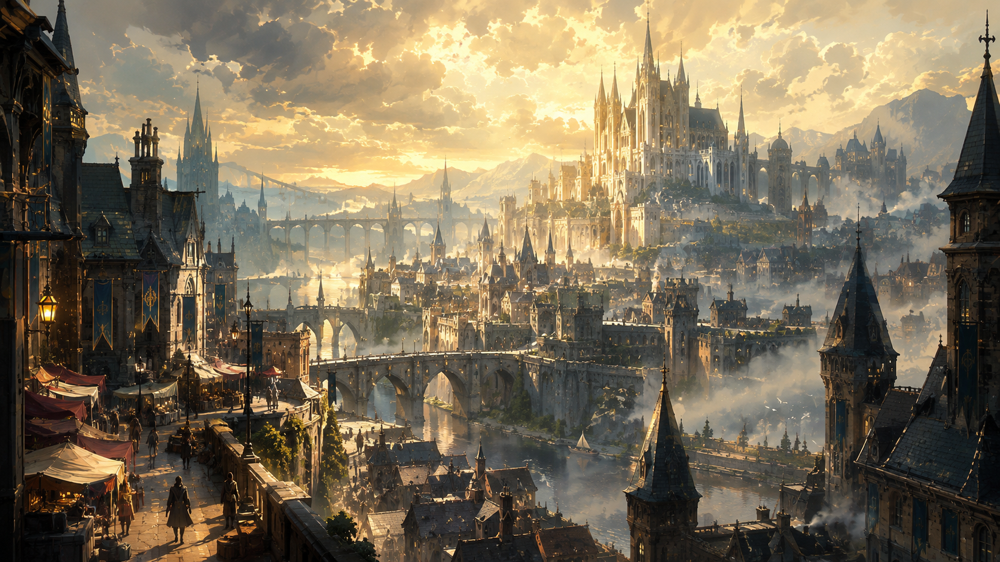
La città è splendida. Le facciate color avorio riflettono la luce calda del cielo, le fontane brillano tra le piazze e piccoli giardini si aprono tra le case. Nonostante la sua imponenza, Aetheria trasmette una sensazione di quiete quasi familiare, come se fosse un luogo che avete già visitato molto tempo fa. Per un istante, mentre varcate l'arco, avete la certezza di sapere già cosa si trova dietro l'angolo successivo. Poi la sensazione svanisce. Davanti a voi, Aetheria si apre in tutta la sua magnificenza. Le strade si diramano tra piazze, portici e vicoli, offrendo innumerevoli possibilità. Potreste cercare una locanda, esplorare il mercato, parlare con gli abitanti o semplicemente perdervi tra le sue vie.Aetheria non è soltanto un luogo fisico. È un'estensione dell'influenza dell'Oltre, una città capace di alterare la percezione dello spazio e di orientare inconsapevolmente le decisioni di chi vi entra. I personaggi credono di essere liberi di scegliere la propria destinazione. In realtà, Aetheria agisce sulle loro percezioni, modifica sottilmente ciò che vedono e rende alcune direzioni più naturali di altre. Non impone ordini né controlla apertamente i loro movimenti: li conduce dove vuole facendo sembrare che siano stati loro a scegliere. Il fenomeno deve rimanere inizialmente impercettibile. Non descrivere strade che si spostano apertamente, edifici che cambiano forma o passaggi che scompaiono davanti ai personaggi. Almeno all'inizio, tutto deve apparire plausibile.
Quando i personaggi decidono dove andare, lascia che discutano e prendano le proprie decisioni. Poi adatta il percorso affinché li conduca gradualmente
verso il luogo che hai stabilito per la scena successiva. Puoi farlo attraverso piccoli dettagli: una strada sembra più larga e invitante delle altre,
mentre un vicolo alternativo appare buio, stretto o poco interessante; un abitante indica spontaneamente una direzione che coincide con quella verso
cui i personaggi stavano già pensando di andare; una strada scelta per raggiungere un luogo diverso conduce a una piazza dalla quale è naturale proseguire
verso la destinazione prevista; un edificio che i personaggi ricordano di aver visto sulla destra sembra trovarsi, poco dopo, alla fine della strada che hanno imboccato.
Quando provano a tornare indietro, riconoscono gli stessi edifici, ma non sono più certi di come abbiano raggiunto quel punto. Questi fenomeni non devono verificarsi tutti insieme.
Distribuiscili nel corso dell'esplorazione, lasciando che i personaggi abbiano il tempo di formulare ipotesi.
Non negare apertamente le scelte dei giocatori e non dire loro che non possono percorrere una determinata strada. Se decidono di dirigersi verso una locanda, un mercato o un edificio che hai già descritto, lascia che agiscano. È la città a modificare il percorso, non a bloccarli fisicamente. Se scelgono una strada che dovrebbe allontanarli dalla destinazione prevista, puoi far sì che il percorso si ricongiunga gradualmente con quello principale, oppure che una sequenza di svolte li porti in un luogo diverso da quello che intendevano raggiungere. Se si accorgono dell'anomalia e cercano deliberatamente di mettere alla prova la città, non ignorare le loro intuizioni. Lascia che ottengano indizi concreti: potrebbero riconoscere una fontana già vista, scoprire che una piazza sembra ricomparire o verificare che due percorsi apparentemente distinti conducono allo stesso luogo.
Quando i personaggi hanno attraversato alcune strade, introduci un momento in cui si rendono conto di non ricordare esattamente il tragitto appena percorso. Alcuni passaggi del
viaggio attraverso la città sembrano sfuggire
alla loro memoria: ricordano di aver svoltato, di aver attraversato una piazza e di aver superato una fontana, ma non riescono a ricostruire l'ordine preciso degli eventi.
È il primo segnale che Aetheria non sta soltanto guidando i loro passi. Sta cominciando a intervenire sul modo in cui percepiscono e ricordano la realtà.
Alla fine di questa prima esplorazione, i personaggi dovrebbero aver raggiunto il luogo che desideravi introdurre, convinti almeno in parte di averlo scelto autonomamente. Solo in seguito potranno rendersi conto che la città li ha condotti lì fin dall'ingresso.
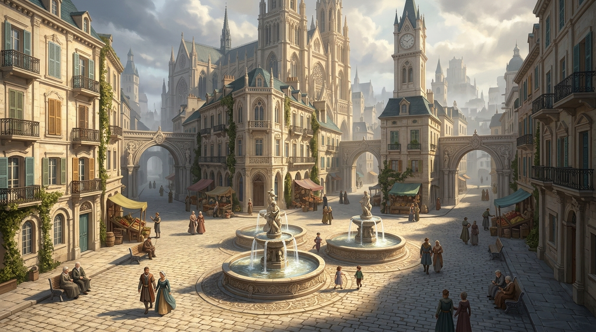
Superato l'arco d'ingresso, vi ritrovate in una grande piazza lastricata di pietra chiara. Al centro si innalzano tre fontane, disposte a breve distanza l'una dall'altra. L'acqua scorre limpida dalle bocche di statue consumate dal tempo, raccogliendosi in vasche decorate con motivi floreali. La piazza è animata da una folla tranquilla. Mercanti sistemano la propria merce, bambini rincorrono piccoli animali tra le fontane e alcuni anziani conversano seduti sulle panchine. Le facciate degli edifici circostanti sono curate, ornate da balconi in ferro battuto e finestre dalle imposte colorate. Nonostante la quantità di persone, nessuno sembra avere particolare fretta. Gli abitanti si muovono con una calma quasi innaturale, come se ogni cosa fosse esattamente al proprio posto.Notate diverse strade che si diramano dalla piazza. Una conduce verso una zona affollata di bancarelle, un'altra verso edifici più eleganti e silenziosi. Poco distante, un'insegna di legno indica una locanda. Per un momento avete la sensazione di aver già visto questa piazza. Non sapreste dire quando, né dove. La sensazione scompare quasi subito, lasciandovi soltanto una vaga familiarità.
La piazza è il primo luogo in cui i personaggi possono sperimentare l'influenza della città. Se si allontanano e successivamente tornano in piazza, potrebbero ritrovare una delle fontane nella stessa posizione in cui l'avevano vista prima, anche se sono arrivati da una strada diversa. Un abitante potrebbe salutari con un cenno, come se li conoscesse. Un bambino potrebbe correre loro incontro e fermarsi improvvisamente, fissando uno dei personaggi, per poi riprendere a giocare senza spiegazioni. Se chiedono indicazioni, gli abitanti rispondono con naturalezza, ma tendono a suggerire sempre le stesse due destinazioni: il Mercato e la Locanda.
INDIZIO
Un vecchio venditore racconta che, qualche tempo prima, un gruppo di viaggiatori aveva attraversato la piazza chiedendo informazioni su una spedizione.
Non ricorda quanti fossero né quando sia successo. Ricorda solamente che uno di loro continuava a chiedere dove si trovasse il vecchio
Quartiere degli alloggi. Mentre racconta l'episodio, il venditore potrebbe soffermarsi per qualche istante su uno dei personaggi, con un'espressione perplessa,
come se stesse cercando di ricordare qualcosa. Se interrogato, liquida la sensazione con una scrollata di spalle.
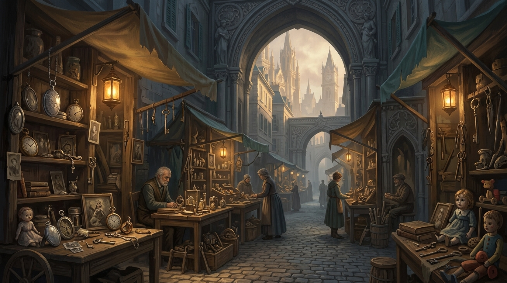
Il mercato si sviluppa lungo una serie di strade strette e porticati, dove le bancarelle si susseguono quasi senza interruzione. Stoffe colorate pendono dalle tende, piccoli oggetti brillano dietro vetrine impolverate e il vociare dei mercanti si mescola al rumore dei passi sul selciato. L'odore di spezie, legno vecchio e metallo ossidato riempie l'aria. Tra le merci esposte riconoscete oggetti comuni: stoviglie, libri, gioielli, strumenti da lavoro e vecchi giocattoli. Eppure, osservandoli più attentamente, avete l'impressione che molti siano stati conservati con una cura sproporzionata rispetto al loro valore.Oren è un mercante anziano, gentile e molto attento ai propri clienti. Non è ostile e non conosce tutta la verita sulla città. Ha imparato che alcuni oggetti sembrano conservare qualcosa dei loro precedenti proprietari. Il suo negozio contiene vari oggetti, legati a ricordi dimenticati:
INDIZIO
Oren ricorda un gruppo di viaggiatori che cercava oggetti e informazioni prima di lasciare la città. Uno di loro gli aveva venduto un piccolo
oggetto personale, dicendo che non voleva più portare con sé nulla che gli ricordasse il viaggio. Il mercante non ricorda con precisione il volto dell'uomo
né quale fosse l'oggetto. Tuttavia, raccontando l'episodio, potrebbe riconoscere in uno dei personaggi un particolare familiare: il modo di parlare,
un gesto o un'espressione già incontrata in passato.
Oren ricorda che il gruppo alloggiava nel vecchio quartiere a nord della città (Quartiere degli alloggi).
Se possibile, scegli un oggetto realmente appartenuto a uno dei personaggi e fallo comparire successivamente nel Quartiere degli alloggi. Non è necessario che Oren lo riconosca: sarà il ritrovamento a rendere l'indizio significativo.
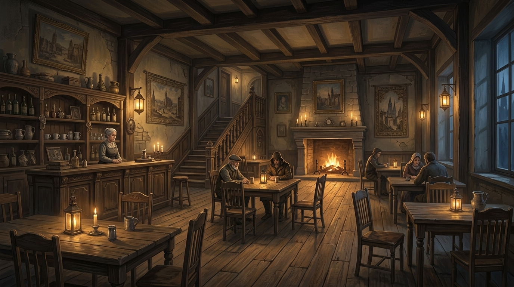
La locanda si trova lungo una strada leggermente in salita, tra due edifici dalle facciate color avorio. Sopra la porta d'ingresso è appesa un'insegna di legno scuro, sulla quale è inciso il disegno di una chiave. All'interno trovate un ambiente caldo e accogliente. Il pavimento è di legno consumato, le pareti sono decorate con vecchi quadri e alcune lanterne illuminano i tavoli disposti attorno a un grande camino. Poche persone occupano la sala. Alcuni mangiano in silenzio, altri conversano a bassa voce. Dietro il bancone, una donna dai capelli grigi sistema alcune bottiglie e vi osserva entrare.“Benvenuti. Non capita spesso di vedere facce nuove da queste parti.” la donna sorride, ma per un istante il suo sguardo si sofferma sui vostri volti con un'espressione difficile da interpretare. “Mi chiamo Mireth. Se cercate un posto dove riposare, siete arrivati nel luogo giusto.”
Mireth gestisce la locanda da molto tempo. È una donna cordiale, ma ha difficoltà a ricordare le persone. A volte confonde i nomi
degli ospiti, altre volte si rivolge a qualcuno come se fosse un vecchio amico. La sua memoria è stata progressivamente alterata dall'influenza
dell'Oltre. Parlando con la donna, i personaggi potrebbero scoprire che dei viaggiatori, tempo fa, hanno soggiornato presso la locanda, ma
non ricorda i volti e nemmeno quanti fossero. Ricorda che uno di loro si svegliava spesso durante la notte, convinto di sentire qualcuno chiamarlo.
Un altro trascorreva molto tempo nella sala comune, annotando qualcosa su un piccolo quaderno. L'ultima sera, uno di loro ha chiesto come lasciare
Aetheria ma Mireth non ricorda la risposta che gli diede.
Durante la conversazione, la donna potrebbe soffermarsi su uno dei personaggi, osservandolo con un'espressione perplessa. Per un istante sembra sul
punto di riconoscerlo, poi scuote la testa e torna alle proprie faccende.
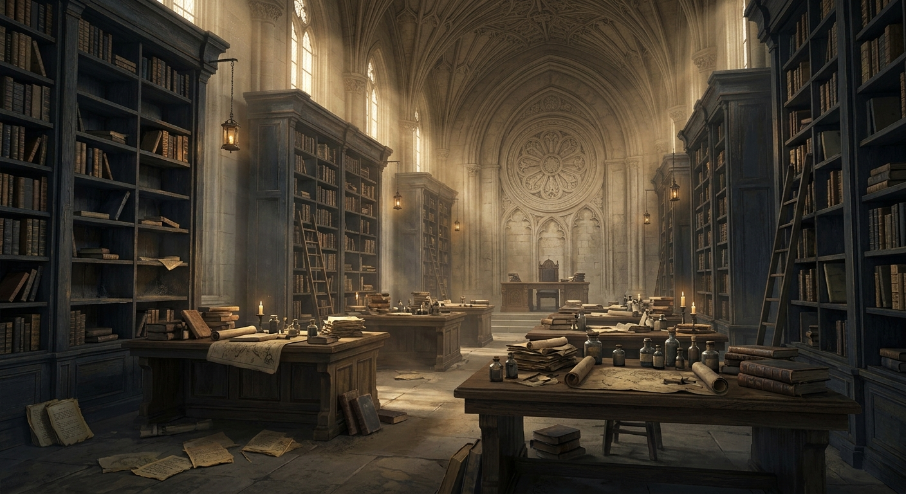
L'archivio si trova in un edificio imponente, costruito in pietra chiara e decorato con colonne sottili. Sopra l'ingresso è inciso un simbolo circolare, circondato da una serie di caratteri che non riuscite a riconoscere. All'interno, il rumore della città scompare quasi completamente. Vi accoglie un lungo corridoio, fiancheggiato da scaffali pieni di registri e volumi rilegati. Dietro un grande tavolo, un uomo anziano sta consultando alcuni documenti. Porta occhiali sottili e ha le dita macchiate d'inchiostro. Quando vi avvicinate, solleva lentamente lo sguardo. “Cercate qualcosa in particolare?”. Si presenta come Salen, uno degli archivisti della città. Alla vostra richiesta di informazioni sulla storia di Aetheria, accenna un sorriso. “La storia di questa città è molto più lunga di quanto possiate immaginare. Anche se, a dire il vero, non tutti i suoi capitoli sono rimasti intatti.”Salen è uno degli ultimi archivisti che cerca ancora di conservare le cronache di Aetheria. È consapevole che alcuni documenti sono stati alterati, ma non conosce la causa esatta. L'archivio contiene registri, cronache e testimonianze di epoche diverse. Tuttavia, la documentazione presenta una lacuna evidente: circa duecento anni di storia risultano incompleti.
Le cronache della città
I registri descrivono Aetheria come una città prospera, fondata in un luogo isolato e raggiungibile attraverso un
antico passaggio di pietra. Le cronache più antiche menzionano persone provenienti da terre lontane, ma le descrizioni
diventano sempre più vaghe con il passare degli anni.
I registri degli abitanti
Alcuni documenti riportano nomi cancellati e sostituiti più volte. In alcuni casi, la stessa persona compare con nomi
differenti, mentre altre risultano registrate senza alcun riferimento alla famiglia o al luogo di provenienza.
Le testimonianze interrotte
Tra i documenti più inquietanti si trova una raccolta di testimonianze scritte da abitanti che dichiaravano
di non riconoscere più i propri familiari. Una frase è stata sottolineata più volte: “Non
distinguono più i nostri volti.”
Il documento sulla spedizione
Un registro più recente menziona un gruppo di viaggiatori giunti ad Aetheria per studiare il passaggio oltre le
mura e le origini della città. Il documento si interrompe bruscamente. L'ultima annotazione riporta:
“La spedizione ha richiesto accesso agli alloggi del quartiere settentrionale.
I membri sostengono di aver trovato qualcosa che non avrebbe dovuto esistere.”
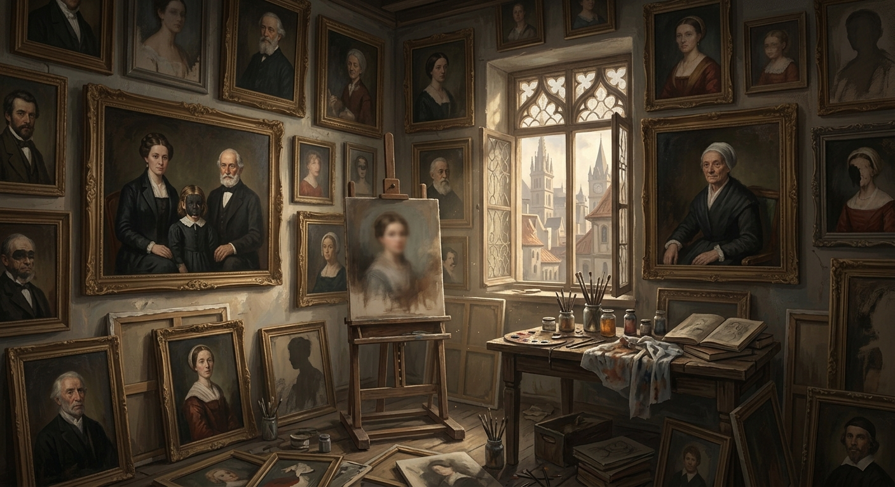
La bottega si trova in una via più silenziosa, lontana dal vociare del mercato. Una piccola insegna raffigura un volto dipinto, circondato da una cornice dorata. Quando entrate, venite accolti dall'odore intenso di olio, pigmenti e legno. Le pareti sono ricoperte di ritratti: uomini, donne, bambini e anziani, raffigurati con abiti appartenenti a epoche differenti. Alcuni dipinti sono molto realistici, altri sembrano appena abbozzati. In diversi casi, i volti sono stati coperti da uno strato di colore più scuro, come se qualcuno avesse tentato di cancellarli. Un uomo anziano, seduto davanti a una tela, interrompe il proprio lavoro e vi osserva. “Siete qui per farvi ritrarre?”, sorride, poi posa il pennello.Il proprietario della bottega è un pittore che da molti anni realizza i ritratti degli abitanti di Aetheria.
Non ricorda più tutti i suoi clienti, ma conserva ancora i dipinti che ha realizzato. La sua bottega offre una manifestazione
visiva del problema che affligge la città, la perdita dell'identità. Alcuni ritratti presentano volti incompleti, con occhi, bocche o
lineamenti che sembrano essere stati cancellati.
Se i personaggi chiedono spiegazioni, il pittore racconta che alcuni clienti sono tornati da lui sostenendo di non riconoscersi più nei
propri ritratti. Altri, invecem hanno chiesto di essere dipinti nuovamente perché non ricordavano più che aspetto avessero.
INDIZIO
In un angolo della bottega si trova un ritratto di gruppo incompleto. Raffigura alcune persone davanti a un edificio di pietra. Il pittore
sostiene di averlo realizzato per un gruppo di viaggiatori che si era recato in città qualche tempo fa. I soggetti, almeno nel vestiario e nella
conformazione fisica, sembrano assomigliare terribilmente ai personaggi. Non deve essere una somiglianza perfetta, ma è sufficiente che
generi il dubbio.
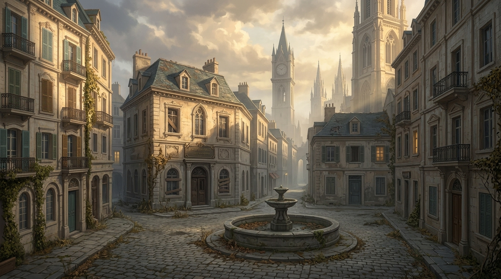
Seguendo le indicazioni raccolte durante le vostre ricerche, raggiungete una zona della città decisamente più silenziosa. Le strade diventano progressivamente strette e gli edifici sembrano più vecchi rispetto a quelli incontrati finora. Le facciate sono ancora eleganti, ma molte finestre sono chiuse da imposte scolorite. Alcuni balconi sono invasi da rampicanti secchi e le insegne delle vecchie attività commerciali oscillano lentamente al vento. Nonostante le condizioni degli edifici, il quartiere non sembra completamente abbandonato. Qua e là si intravedono luci dietro le finestre, mentre alcune porte presentano segni recenti di utilizzo. Arrivate davanti a una piccola piazza circondata da edifici residenziali. Al centro si trova una vecchia fontana, ormai priva d'acqua. Sul bordo della vasca sono incise alcune parole, quasi completamente consumate.“A chi è partito. A chi è rimasto. A chi non ricorda.”
Poco distante individuate un edificio più grande degli altri, con una porta di legno scuro e alcune finestre murate. Sulla facciata è ancora visibile una targa metallica, corrosa dal tempo. Non riuscite a distinguere tutte le lettere, ma una parola è ancora leggibile: “Spedizione”.
Questo è il luogo verso cui Aetheria ha cercato di condurre i personaggi attraverso gli indizi raccolti nei precedenti luoghi. Il quartiere era stato utilizzato come alloggio e punto di ritrovo da un gruppo di viaggiatori che avevano iniziato a indagare sulla città e sul passaggio oltre il portale. Quello che i personaggi ancora non sanno è che quella spedizione era composta proprio da loro. In un precedente passaggio attraverso Aetheria, i personaggi avevano già percorso quelle strade, soggiornato in quegli alloggi e iniziato a indagare sulla natura della città e sul Secondo Popolo. Durante la loro permanenza, tuttavia, erano stati progressivamente privati dei propri ricordi e della consapevolezza della loro identità.
Gli eventi che hanno concluso quella spedizione rimangono sconosciuti. I documenti ritrovati nell'edificio sono frammentari, alcuni nomi sono stati cancellati e molte testimonianze sembrano contraddirsi. Aetheria ha conservato tracce della loro precedente permanenza, ma non necessariamente in modo integro. Alcuni oggetti, annotazioni e ambienti potrebbero essere cambiati nel tempo o essere stati alterati dall'influenza dell'Oltre.
La sala comune
Un ambiente un tempo utilizzato come luogo di ritrovo. Ci sono tavoli, sedie rovesciate, scaffali vuoti e alcune mappe della regione.
Sul tavolo centrale sono ancora visibili i segni lasciati da vecchie tazze, fogli e oggetti spostati in fretta. Su una parete è appeso
un foglio ingiallito, fissato con alcuni chiodi arrugginiti. Si tratta di un elenco dei membri della spedizione. Molti nomi sono stati
cancellati con violenza, altri risultano illeggibili, come se l'inchiostro fosse stato assorbito dalla carta. Alcuni nomi, tuttavia,
sono ancora perfettamente distinguibili. Sono gli stessi nomi dei personaggi. Accanto a ciascuno compare una piccola annotazione,
ormai difficile da interpretare: una data, un incarico o una breve descrizione.
Non è possibile stabilire con certezza quando l'elenco sia stato compilato, né perché alcuni nomi siano stati cancellati.
Le stanze private
Le camere sono ancora arredate. In alcune si trovano vestiti, libri e oggetti personali lasciati dagli occupanti. La polvere ricopre
quasi ogni superficie, ma alcuni mobili sembrano essere stati utilizzati più recentemente. Ogni stanza presenta caratteristiche differenti.
Una è particolarmente ordinata, un'altra è piena di appunti e fogli sparsi, mentre in una terza si trovano mappe e strumenti da viaggio.
Esaminandole con attenzione, i personaggi potrebbero riconoscere dettagli inspiegabilmente familiari: un oggetto simile a qualcosa che possiedono,
una frase scritta con la stessa grafia di un personaggio.
In una delle camere si trova un diario. Le prime pagine descrivono l'arrivo ad Aetheria e lo stupore suscitato dalla città.
Le annotazioni successive raccontano le prime difficoltà incontrate durante l'esplorazione, fino a diventare sempre più confuse.
Un passaggio, scritto con una grafia incerta, recita:
“Non è la città a essere cambiata. Siamo noi a non riuscire più a ricordare ciò che vediamo.
I nostri compagni hanno il nostro stesso volto, la nostra stessa voce, ma a volte non riusciamo più a riconoscerli.
Ieri ho trovato una lettera che avevo scritto a uno di loro. Non ricordo di averla scritta. Non ricordo nemmeno
perché avrei dovuto farlo.”
La stanza delle mappe
Qui i personaggi trovano una grande mappa di Aetheria, distesa sopra un tavolo e fissata agli angoli da piccoli pesi metallici.
Alcune strade sono state evidenziate, altre cancellate e riscritte più volte. Al centro compare un simbolo che ricorda quello inciso sul portale.
Accanto alla mappa principale si trova una raccolta di fogli più piccoli, ricoperti di annotazioni. Rappresentano diversi percorsi attraverso la
città, con indicazioni, distanze e punti di riferimento. Alcuni tragitti sembrano interrompersi bruscamente. Altri si ricongiungono in luoghi
già attraversati, nonostante le annotazioni suggeriscano che i membri della spedizione avessero seguito direzioni differenti.
Una frase, scritta sul margine di uno dei fogli, attira la loro attenzione:
“Abbiamo provato a cambiare strada.
Abbiamo seguito percorsi diversi, imboccato vicoli che non avevamo mai visto e attraversato piazze sconosciute. Eppure, ogni volta, siamo tornati
negli stessi luoghi. La città non ci impedisce di scegliere. Semplicemente, sembra sapere già dove vogliamo andare.”
Una serie di annotazioni suggerisce inoltre che il portale non sia semplicemente un ingresso alla città, ma un passaggio verso qualcosa che
esiste al di là della realtà conosciuta.
L'ultima annotazione
In un cassetto chiuso a chiave si trova un foglio piegato, scritto con una grafia nervosa e irregolare. La carta è macchiata e alcune parole
risultano difficili da leggere:
“Abbiamo finalmente compreso cosa si nasconde dietro le strade di Aetheria. Non sono gli abitanti a dimenticare.
Qualcosa si nutre di ciò che siamo, di ciò che ricordiamo e di ciò che desideriamo. All'inizio pensavamo si trattasse di semplici disturbi della memoria.
Poi abbiamo cominciato a dimenticare i nostri stessi nomi. I volti dei nostri compagni diventavano estranei, i ricordi si confondevano e persino
le nostre voci sembravano appartenere a qualcun altro. Quando non resta più nulla da prendere, ciò che rimane continua a camminare, a parlare e a sorridere.
Ma non è più una persona. Dobbiamo trovare un modo per uscire. Non possiamo permettere che accada ancora. Se state leggendo queste righe,
cercate di ricordare chi siete. Cercate di ricordare chi eravate prima di arrivare qui. E soprattutto, non fidatevi dei vostri ricordi”
Quando lasciate alle vostre spalle la vecchia residenza, la città sembra diversa da come l'avevate vista durante il giorno. La luce dorata che illuminava le facciate è ormai scomparsa. Le ombre si allungano lungo le strade lastricate, mentre le prime luci delle abitazioni cominciano ad accendersi dietro le finestre. In lontananza, le campane scandiscono l'ora della sera. Gli abitanti continuano le proprie attività. Alcuni rientrano nelle abitazioni, altri si attardano davanti alle botteghe ormai prossime alla chiusura. Le conversazioni si mescolano al rumore dei passi e al suono dell'acqua che scorre nelle fontane. Eppure, c'è qualcosa di insolito. Non sapreste indicare con precisione cosa sia cambiato, ma avete la sensazione che la città sia diventata più silenziosa. Come se, sotto il normale brusio delle strade, fosse comparso un secondo suono, appena percettibile. Per un istante vi sembra persino di riconoscere il percorso davanti a voi. Non soltanto perché lo avete già attraversato, ma perché avete l'impressione di sapere dove conduca, ancora prima di percorrerlo.
Un improvviso movimento tra la folla attira la vostra attenzione. Poco distante, alcune persone si sono fermate attorno a un uomo seduto sul bordo di una fontana. Indossa abiti comuni e tiene le mani appoggiate sulle ginocchia. Sembra confuso, incapace di comprendere perché gli abitanti si siano radunati intorno a lui. Una donna gli si avvicina, l'uomo solleva lentamente la testa. È in quel momento che notate qualcosa di sbagliato. Il suo volto è liscio. Non presenta occhi, naso o bocca. Soltanto una superficie pallida, leggermente deformata, come se qualcuno avesse tentato di modellare un viso senza riuscirci. La folla rimane immobile. Poi, quasi contemporaneamente, tutti distolgono lo sguardo e riprendono le proprie attività. Come se non avessero visto nulla.
L'uomo è un abitante di Aetheria che ha perso quasi completamente la propria identità. Si trova in una fase avanzata della trasformazione in Senzaeco. La reazione della folla è particolarmente importante. Gli abitanti non devono apparire spaventati o sorpresi. Alcuni potrebbero persino sostenere che quell'uomo sia sempre stato così. li abitanti non stanno necessariamente mentendo consapevolmente. La loro percezione della realtà è alterata e sembra incapace di riconoscere ciò che dovrebbe risultare impossibile.
Se i personaggi decidono di avvicinarsi all'uomo, questi reagisce alla loro presenza. La testa si inclina leggermente nella loro direzione, come se fosse riuscito a percepirli senza bisogno di occhi. Dopo qualche istante, pronuncia alcune parole con una voce debole e incerta: “Io... vi conosco.”. L'uomo rimane immobile per qualche secondo. “Vi ho già visti, Ma non ricordo dove...”. La superficie liscia del suo volto comincia lentamente a deformarsi. Per un brevissimo istante, sulla sua pelle pallida compaiono lineamenti umani, simili a quelli di uno dei personaggi. Poi l'immagine scompare, lasciando nuovamente spazio alla superficie priva di tratti. “Io... vi conosco... siete tornati?”
L'uomo sembra faticare a mantenere il controllo dei propri movimenti. Le mani tremano leggermente e la testa si abbassa, come se ogni parola richiedesse uno sforzo enorme. Quando torna a parlare, la sua voce è appena un sussurro. “Dovete salire...”. Si interrompe. “Non cercate qui. Non più.”. La testa si solleva lentamente. Per un istante sembra quasi che stia cercando di guardarvi. “ Dove vengono custoditi i nomi... le storie di chi è arrivato... lì... troverete ciò che avete dimenticato.”. Prima che possiate rivolgergli altre domande, l'uomo si irrigidisce. La sua testa ricade lentamente sul petto e le mani scivolano lungo le ginocchia, lasciando cadere un piccolo pezzo di carta con scritto “Palazzo delle Cronache”
Lasciandovi alle spalle la fontana e la piccola folla, riprendete il cammino attraverso le strade di Aetheria. La città sembra progressivamente svuotarsi. Le botteghe chiudono le proprie imposte, le finestre si illuminano una dopo l'altra e il rumore dei passanti si fa sempre più distante. Seguendo la direzione indicata dall'uomo, trovate una strada che conduce verso la parte alta. Vi ritrovate davanti a una lunga scalinata di pietra. Sale tra edifici monumentali, costeggiando facciate decorate da bassorilievi e statue consumate dal tempo. Da lassù potete osservare gran parte di Aetheria. I tetti si estendono sotto di voi, mentre le ultime luci del crepuscolo si riflettono sulle torri e sulle guglie più alte. In cima alla scalinata si erge un edificio imponente.
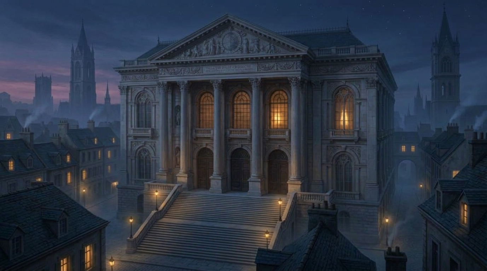
La sua facciata è caratterizzata da alte colonne, grandi finestre e un portale decorato con figure scolpite. Sopra l'ingresso, un'iscrizione in una lingua antica riporta il nome della struttura. Non sapete perché, ma nel momento in cui leggete quelle parole avete la sensazione di essere arrivati nel posto giusto.Il portale del palazzo è socchiuso. Al suo interno si apre un grande atrio illuminato da alcune lampade appese alle pareti. Il soffitto è sostenuto da colonne di pietra chiara, mentre lungo i lati della sala si trovano scaffali colmi di volumi, registri e documenti. L'ambiente è silenzioso. Nonostante l'imponenza dell'edificio, non sembra esserci molta attività. Un lungo banco di legno occupa il fondo della sala e, dietro di esso, una figura anziana è intenta a sistemare alcuni fogli. Quando vi avvicinate, l'uomo solleva lentamente lo sguardo. “Buonasera. Non capita spesso di ricevere visitatori a quest'ora”. Osserva brevemente il gruppo, soffermandosi per un istante su ciascuno di voi. “Cercate qualcosa in particolare?”
L'edificio deve apparire diverso dagli altri luoghi visitati finora. Non è una semplice biblioteca o un archivio commerciale, ma una struttura monumentale che sembra avere un'importanza centrale nella storia della città. I personaggi possono raggiungerlo seguendo le indicazioni del Senzaeco, chiedendo informazioni agli abitanti oppure esplorando autonomamente la parte alta della città. Se chiedono indicazioni, gli abitanti conoscono il palazzo e possono descrivere come raggiungerlo. Tuttavia, le loro risposte possono risultare vaghe quando vengono interrogati sul suo contenuto o sulla sua funzione. Durante il tragitto, puoi inserire piccoli segnali che suggeriscano come la città stia accompagnando i personaggi verso la loro destinazione: un abitante indica spontaneamente la direzione del palazzo, anche senza essere interpellato; se provano a cambiare direzione si ritroveranno sempre e comunque il palazzo sulla traiettoria.
Il Palazzo delle Cronache è il luogo in cui si conservano i documenti relativi alla storia di Aetheria: registri degli abitanti, cronache cittadine, testimonianze di viaggiatori e resoconti delle spedizioni che hanno raggiunto la città. L'edificio costituisce il collegamento tra il mistero della vecchia spedizione e la verità sulla natura di Aetheria. L'archivista può essere interpretato come una figura cortese, composta e apparentemente disponibile. Non deve però diventare una guida che spiega direttamente ai personaggi il funzionamento della città. Se interrogato, può indicare le diverse sezioni dell'archivio e aiutare i personaggi a individuare i documenti pertinenti. La sua reazione alla presenza del gruppo deve essere leggermente ambigua: sembra riconoscere qualcosa, ma non manifesta apertamente sorpresa.
Documenti
L'archivio contiene diverse tipologie di documenti:
Registri degli abitanti: raccolgono i nomi delle persone che hanno vissuto nella città.
Cronache cittadine: riportano eventi importanti della storia della città.
Registri dei viaggiatori: contengono annotazioni sulle persone giunte da oltre i confini di Aetheria; una
spedizione composta da un gruppo di avventurieri che corrisponde al loro numero e ai loro nomi.
Resoconti delle spedizioni: Frammentaria, alterna lucidità a stati di confusione.
Dopo aver consultato i primi documenti, cominciate a rendervi conto che le informazioni custodite nel palazzo sono molto più importanti di quanto aveste immaginato. Tra le pagine ingiallite e le annotazioni lasciate da mani sconosciute emergono riferimenti alla vecchia spedizione. I vostri nomi compaiono più volte, associati a date, luoghi e testimonianze che non ricordate di aver mai vissuto.
Eppure, nonostante la quantità di informazioni raccolte, sembra mancare qualcosa.
Alcuni documenti sono incompleti. Altri fanno riferimento a eventi che non vengono mai descritti per intero. Le cronache più antiche
sembrano custodire una storia che qualcuno ha cercato di nascondere. L'archivista, accorgendosi del vostro interesse, si avvicina lentamente.
“Ci sono cose che è meglio non cercare di ricordare troppo in fretta.” Si ferma davanti a uno
scaffale e posa una mano su un vecchio registro. “Se volete comprendere davvero questa città, dovrete
leggere ciò che è stato scritto prima del vostro arrivo.” Per un istante vi sembra che stia per aggiungere altro.
Poi si limita a tornare al proprio banco. Fuori dalle finestre, la notte è ormai calata su Aetheria.
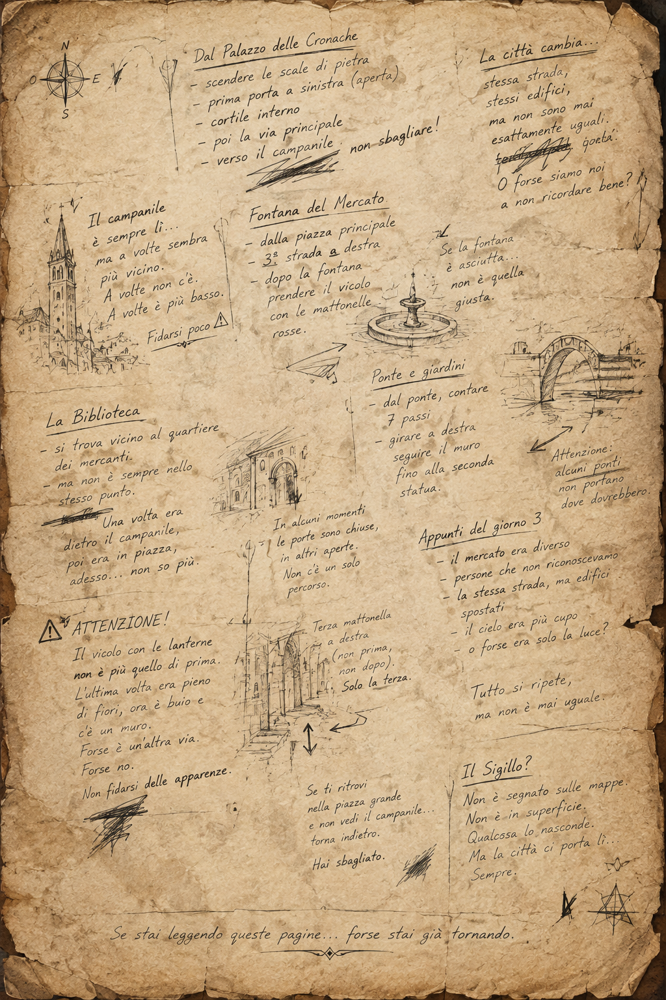
Mentre sfogliate le pagine del Registro della Spedizione, qualcosa scivola improvvisamente tra i fogli e cade sul pavimento. È un piccolo pezzo di carta ingiallita, piegato più volte e consumato lungo i bordi. A differenza delle pagine ordinate del registro, questo sembra essere stato compilato in fretta, forse durante uno spostamento. La scrittura è irregolare, alcune frasi sono cancellate e altre aggiunte a margine, accompagnate da frecce, schizzi appena accennati e indicazioni che sembrano contraddirsi. Non è una vera mappa di Aetheria. Non ci sono confini, quartieri o strade tracciate con precisione. Soltanto riferimenti sparsi: il campanile, una fontana, un ponte, un vicolo con le lanterne. Un brivido vi attraversa. Immagini frammentarie affiorano nella mente. Poi tutto svanisce. Per un breve istante, avete la sensazione inquietante di sapere già dove conducono.Il foglio rimane aperto tra le vostre mani. Le annotazioni sono confuse, le indicazioni incomplete e alcuni riferimenti sembrano non avere alcun senso. Eppure, dopo averlo osservato attentamente, avete la sensazione che quelle poche informazioni siano sufficienti per tentare di orientarvi. Fuori dal Palazzo delle Cronache, Aetheria è ormai immersa nella notte. Le strade sono illuminate da lanterne e finestre, mentre una leggera foschia si raccoglie tra gli edifici. La città sembra tranquilla, quasi immobile. Decidete di seguire le indicazioni. Il primo riferimento è il campanile. Lo individuate facilmente, svettando sopra i tetti della città. Da lì, secondo le annotazioni, dovreste proseguire fino a una piccola piazza con una fontana. Ma quando raggiungete il luogo indicato, qualcosa non torna: la fontana è diversa da quella descritta sul foglio. Le mattonelle che la circondano non corrispondono allo schizzo e il vicolo che avreste dovuto imboccare sembra non esistere. Consultate nuovamente il foglio. Una delle annotazioni, quasi nascosta sotto una cancellatura, sembra suggerire una strada alternativa. Proseguite. Attraversate un ponte, percorrete un vicolo stretto e raggiungete un incrocio che non ricordate di aver già incontrato. Eppure, alcuni particolari vi risultano stranamente familiari: una finestra murata, un'insegna spezzata, una lanterna che oscilla senza vento.
Le indicazioni continuano a portarvi avanti, ma Aetheria sembra cambiare intorno a voi. Alcune strade appaiono più lunghe di quanto dovrebbero, altre sembrano ricondurvi in luoghi già attraversati. A ogni deviazione, il foglio sembra acquistare un significato leggermente diverso, come se fosse stato scritto conoscendo già queste anomalie. Poi, quasi senza accorgervene, gli edifici cominciano a diradarsi. Le strade diventano più strette, le costruzioni più antiche e le luci delle abitazioni sempre più rare. Il rumore della città si allontana lentamente, lasciando spazio a un silenzio insolito. Davanti a voi compare una costruzione in pietra, parzialmente nascosta tra gli edifici e le strutture più recenti. Non sembra appartenere alla stessa epoca del resto di Aetheria. Le sue mura sono consumate dal tempo e alcune incisioni, ormai quasi illeggibili, ricoprono la superficie. Consultate un'ultima volta il foglio. Non ci sono dubbi: siete arrivati nel luogo indicato dalle annotazioni. Eppure, proprio accanto all'ultima indicazione, compare una frase che prima non avevate notato, scritta con una grafia più incerta e premuta con forza sulla carta: “Se siete arrivati fin qui, significa che il ciclo è ricominciato.”. Davanti a voi si apre un passaggio che scende verso l'oscurità.
Per raggiungere il luogo indicato, i personaggi devono riuscire a interpretare e seguire le annotazioni dello stralcio di mappa.
Il Master dovrebbe richiedere una prova particolarmente ardua, scegliendo liberamente la caratteristica, l'abilità o la meccanica equivalente
in base al sistema utilizzato. Non si tratta semplicemente di leggere la grafia: i personaggi devono confrontare i diversi riferimenti,
riconoscere le indicazioni attendibili e comprendere che Aetheria modifica continuamente la propria conformazione.
Alcune indicazioni sono ancora valide, altre descrivono luoghi che non corrispondono più a quelli attuali.
In caso di successo, i personaggi riescono a ricostruire il percorso e raggiungono la destinazione senza particolari difficoltà.
Durante il tragitto possono comunque notare piccoli cambiamenti nell'ambiente, a conferma della natura mutevole della città.
In caso di fallimento, i personaggi interpretano male una o più indicazioni e finiscono per imboccare un percorso sbagliato.
Le strade sembrano ricondurli più volte negli stessi luoghi, mentre alcuni punti di riferimento scompaiono o cambiano posizione.
Il Master può introdurre una conseguenza adeguata al sistema utilizzato:
Il passaggio si apre su una lunga scalinata scavata nella roccia. I gradini, consumati dal tempo, scendono verso una profondità che non riuscite a distinguere. L'aria diventa progressivamente più fredda e umida, mentre alle vostre spalle i rumori della città scompaiono del tutto. Scendendo, vi accorgete che le pareti non sono semplicemente quelle di un'antica costruzione sotterranea. Sono ricoperte da incisioni, simboli e iscrizioni che sembrano appartenere a una lingua sconosciuta. Alcuni tratti, tuttavia, vi risultano familiari. Li avete già visti altrove, nelle cronache e nei documenti custoditi al Palazzo delle Cronache.
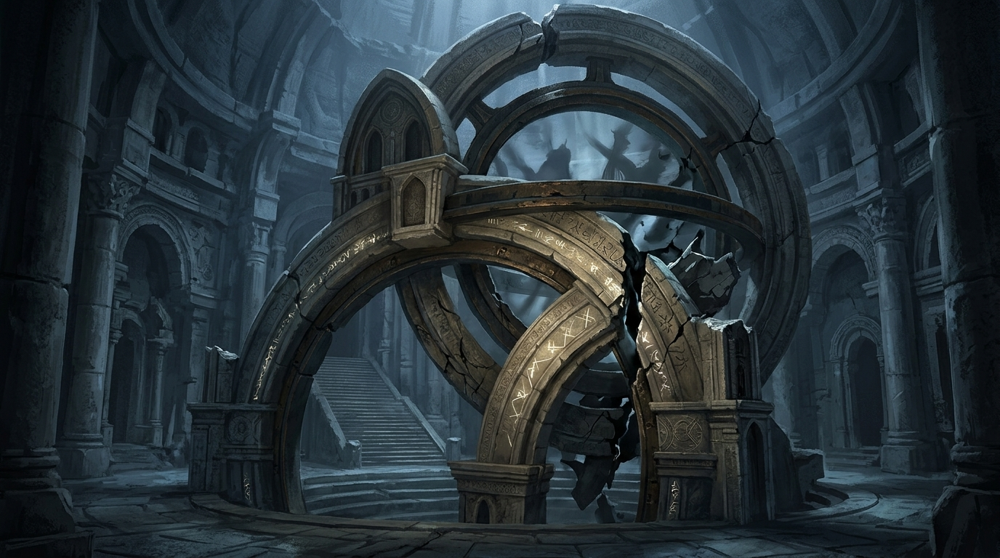
La scalinata termina davanti a un enorme ambiente circolare. Al centro si trova una struttura monumentale, composta da archi di pietra e grandi elementi metallici incastonati nella roccia. Le sue superfici sono attraversate da sottili incisioni luminose, che pulsano debolmente. Oltre la struttura, lo spazio sembra deformarsi. Alcune delle incisioni luminose sono spente. Altre si accendono e si interrompono senza seguire alcun ritmo. Profonde crepe attraversano la struttura e, da una di esse, filtra una luce scura, innaturale, che sembra espandersi lentamente sulla pietra. Per un istante, una sensazione familiare vi attraversa. Avete trovato il Sigillo.Un'immagine affiora nella mente: voi stessi, in piedi nello stesso ambiente, davanti alla medesima struttura. Qualcuno sta parlando, ma le parole
si perdono prima che riusciate a comprenderle. Poi, nel silenzio, una voce sembra provenire da ogni direzione.
“Siete tornati.”
La voce non è maschile né femminile. Non sembra provenire da un punto preciso della sala. È come se fosse la pietra stessa a parlare,
come se le pareti, il pavimento e persino l'aria avessero pronunciato quelle parole. Per qualche istante non accade nulla. Poi alcune incisioni
si illuminano contemporaneamente. La luce si propaga lungo gli archi e raggiunge il centro della struttura, dove si raccoglie in un bagliore pallido.
La voce torna a farsi sentire.
“Avete camminato a lungo per ritrovare ciò che avevate perduto. Ma sapete davvero cosa state cercando?”
La luce al centro del Sigillo pulsa lentamente. Le ombre sulle pareti sembrano allungarsi, assumendo per brevi istanti forme che ricordano figure umane.
Non riuscite a distinguere volti, ma avete la sensazione di essere osservati.
“Prima di proseguire, rispondete.”
Una breve pausa.
“Non possiedo un corpo, eppure mi portate sempre con voi. Gli altri possono pronunciarlo, ma soltanto voi potete perderlo. Quando scompare, anche chi siete comincia a svanire. Che cosa sono?”
La domanda rimane sospesa nella sala. Le incisioni luminose si fanno più intense, come se la struttura attendesse una risposta. La voce non sembra impaziente. Al contrario, il suo tono ha qualcosa di malinconico, quasi familiare. Dopo aver ascoltato la vostra risposta, qualunque essa sia, la luce si sposta lungo la superficie del Sigillo. Per un istante, sulle pareti compaiono immagini indistinte: persone che camminano per le strade di Aetheria, una piazza, una locanda, un gruppo di viaggiatori che attraversa un ponte. Le immagini svaniscono rapidamente. La voce riprende.
“Una volta perduta, cercherete di ritrovarmi. Più tenterete di trattenermi, più potrò sfuggirvi. Sono ciò che vi lega a ciò che è stato, ma non posso riportarvi indietro. Che cosa sono?”
Mentre la domanda risuona, avvertite una strana sensazione. Alcuni ricordi riaffiorano per un istante: volti, luoghi e momenti che non riuscite a collocare. Uno di voi potrebbe persino riconoscere una voce o un gesto, senza riuscire a ricordare a chi appartenga. La luce si affievolisce.
“Avete già cercato queste risposte. Eppure, ogni volta, sembrate dimenticarle.” Un rumore profondo attraversa la sala. La struttura vibra leggermente e alcune particelle di polvere cadono dal soffitto. La voce pronuncia un'ultima domanda.
“Non sono una strada, eppure vi conduco sempre nello stesso luogo. Non sono una prigione, eppure non riuscite a lasciarmi. Ogni volta che credete di avermi superato, ricominciate dal principio. Che cosa sono?”
Questa volta, il silenzio che segue sembra più lungo. Al centro del Sigillo, la luce comincia a pulsare con maggiore intensità. Le crepe si
illuminano e, per un breve istante, intravedete qualcosa oltre la struttura: una distesa indefinita, attraversata da sagome lontane.
Una parte della parete alle vostre spalle si illumina debolmente. Non l'avevate notata prima. È una superficie di
pietra ricoperta da incisioni, segni e annotazioni. Alcune sembrano essere state tracciate con strumenti improvvisati, altre sono state
incise direttamente nella roccia. Avvicinandovi, riconoscete qualcosa di familiare. Sono nomi. Nomi che conoscete. I vostri. Sono scritti
più volte, in punti diversi della parete. Alcuni sono stati cancellati, altri sovrapposti, altri ancora accompagnati da date e brevi annotazioni
ormai difficili da leggere. Accanto a uno dei nomi riconoscete persino un piccolo simbolo, un segno che uno di voi utilizza abitualmente.
Poco più in basso, alcune parole attirano la vostra attenzione:
“Prima spedizione. Il Sigillo è instabile.”
“Non siamo riusciti a trovare un modo per fermare il deterioramento.”
“La città continua a ricondurci qui.”
“Se torneremo, non dobbiamo ripetere gli stessi errori.”
Sotto queste frasi, una parte della parete è stata scheggiata con violenza. Sembra che qualcuno abbia cercato
di cancellare un'ultima annotazione, ma alcune parole sono ancora visibili:
“Non fidatevi della città. Non vuole che usciate. Vuole che torniate.”
Un brivido vi attraversa. Non avete trovato le tracce di un'altra spedizione. Non avete trovato i resti di viaggiatori sconosciuti.
Avete trovato le tracce del vostro stesso passaggio. Le immagini frammentarie che avevate intravisto durante il viaggio tornano improvvisamente
alla mente. La sensazione di familiarità davanti al foglio, le strade già percorse, il ricordo di voi stessi davanti al Sigillo. Non era immaginazione.
Eravate già stati lì. La voce interrompe i vostri pensieri.
“Avete cercato una via d'uscita. Avete cercato risposte. Avete cercato di ricordare chi eravate.”
La luce del Sigillo si fa più intensa. “E ogni volta siete tornati.”
Un profondo tremore attraversa la sala. Le incisioni sulla struttura si accendono e si spengono rapidamente, mentre dalle crepe filtra quella luce
scura che sembra provenire da qualcosa oltre il confine. Per un istante, avete la sensazione che l'intera città si trovi sopra di voi, sospesa in
un silenzio innaturale. La voce torna a parlare, questa volta con un tono più distante.
“Aetheria vi ha condotti fin qui. Ha aperto le sue strade, vi ha mostrato
ciò che dovevate vedere e vi ha lasciato credere di essere voi a scegliere la direzione.”
Una pausa. “Non è la prima volta che vi conduce al Sigillo. Non sarà l'ultima.”
Le parole sembrano risuonare direttamente nella vostra mente.
“La città ricorda ciò che voi dimenticate. E ciò che dimenticate ritorna.”
La luce al centro della struttura si contrae, lasciando emergere per un istante una forma indistinta oltre le fenditure. Non riuscite a
comprenderne i contorni, ma percepite qualcosa di profondamente estraneo alla realtà che conoscete.
“Il confine si sta indebolendo. Ciò che è stato imprigionato cerca di tornare. E voi siete nuovamente qui.”
La voce tace. Per la prima volta da quando siete entrati nella sala, avete la sensazione che qualcosa stia aspettando una vostra decisione. Non sapete se la voce abbia cercato di aiutarvi, di mettervi in guardia o semplicemente di ricordarvi ciò che siete destinati a fare. Ma ora comprendete una cosa: Aetheria non vi ha condotti al Sigillo per caso. Vi ha attirati lì perché il ciclo potesse ricominciare. Eppure, davanti a voi, il Sigillo è ancora instabile. Le sue incisioni sono spezzate, le sue difese sembrano sul punto di cedere e qualcosa, dall'altra parte, continua a premere per attraversare il confine. Forse questa volta potete cambiare ciò che è già accaduto. O forse state soltanto ripetendo, ancora una volta, gli stessi passi. La voce pronuncia un'ultima frase. “Adesso ricordate. Ma ricordare non significa sapere cosa fare.” La luce si spegne quasi completamente. Rimanete soli davanti al Sigillo.
Il luogo raggiunto dai personaggi è una struttura sotterranea antichissima, costruita attorno al Sigillo. Non è un semplice portale né un manufatto isolato: fa parte del sistema che mantiene Aetheria separata dall'Oltre. Il Sigillo è attualmente compromesso. Le incisioni luminose interrotte, le fratture nella struttura e le manifestazioni che si intravedono oltre il confine sono segnali del deterioramento in corso. Il Secondo Popolo sta indebolendo attivamente il Sigillo dall'interno, sfruttando la progressiva perdita di memoria e identità degli abitanti di Aetheria.
Le domande
Gli indovinelli non sono prove che bloccano il percorso. Servono a far emergere i temi dell'avventura e a provocare ricordi frammentari. Le
risposte attese sono:
Il ciclo di Aetheria
Aetheria attira i personaggi verso il Sigillo perché il loro ritorno fa parte di un ciclo che si è ripetuto più volte. La città sembra
guidarli attraverso le proprie strade, fino a condurli nuovamente al cuore del proprio sistema. Il ciclo è legato alla precedente spedizione:
i personaggi erano già arrivati al Sigillo, avevano cercato di comprendere cosa stesse accadendo e non erano riusciti a interrompere il deterioramento.
La perdita dei loro ricordi li ha riportati al punto di partenza.
Il Master deve tuttavia mantenere una distinzione importante: non è ancora
stabilito se Aetheria agisca consapevolmente oppure se ripeta un comportamento radicato nella propria natura e nel sistema che la tiene isolata.
Non bisogna quindi presentare la città come un'entità malvagia che desidera deliberatamente la sofferenza dei personaggi. Il suo comportamento è
inquietante proprio perché il suo scopo rimane incerto.
Il ruolo del Secondo Popolo
Il Secondo Popolo è la minaccia che agisce dall'interno del Sigillo. Sta sfruttando la perdita di memoria e identità per indebolire
il confine e tentare di raggiungere la realtà conosciuta.
Il Master deve mantenere separati questi due elementi: Aetheria conduce i personaggi al Sigillo attraverso il ciclo, mentre il
Secondo Popolo cerca di sfruttare il deterioramento della struttura.
L'Atto IV termina quando i personaggi hanno compreso di essere già stati al Sigillo e che il loro ritorno non è casuale. A questo punto devono essere consapevoli che Aetheria è una città-prigione costruita attorno al Sigillo - Il Secondo Popolo sta indebolendo il contenimento dall'interno - La loro precedente spedizione era già arrivata nello stesso luogo, senza riuscire a interrompere il ciclo.
Il silenzio che ha seguito le ultime parole della città viene interrotto da un rumore profondo, simile a quello di una montagna che si spezza. La struttura al centro della sala vibra. Sottili crepe si propagano lungo le sue superfici, mentre le iscrizioni che fino a poco prima emanavano una luce fioca cominciano a spegnersi una dopo l'altra. Oltre il Sigillo, qualcosa si muove. L'oscurità dall'altra parte sembra addensarsi, premendo contro le fratture come una massa viva. Per un istante intravedete forme indistinte, sagome che si sovrappongono e si separano, volti che appaiono e scompaiono prima ancora che riusciate a riconoscerli. Poi una voce attraversa la sala. Non proviene più da ogni direzione. Questa volta sembra arrivare direttamente da oltre il Sigillo.
“Avete ricordato.”
La voce è composta da molte voci diverse, alcune maschili, altre femminili, alcune giovani, altre incredibilmente antiche. Si sovrappongono senza
mai riuscire a formare un'unica voce.
“Avete ricordato chi siete. Avete ricordato ciò che avete perduto. E ora credete di poter scegliere.”
Una delle fratture si allarga.
“Ma siete già stati qui. Avete già cercato di fermarci. Avete già cercato di salvarli.”
La luce nella sala si spegne per un istante. Quando ritorna, una figura si trova dall'altra parte del Sigillo. È alta e sottile, con proporzioni
vagamente umane. Il suo corpo sembra composto da una materia scura e irregolare, attraversata da sottili filamenti luminosi. Sulla sua superficie
si distinguono frammenti di volti: occhi che si aprono sulle braccia, bocche che affiorano dal torace, lineamenti che si deformano continuamente.
La creatura appoggia una mano contro la barriera. Il Sigillo reagisce con un violento bagliore.
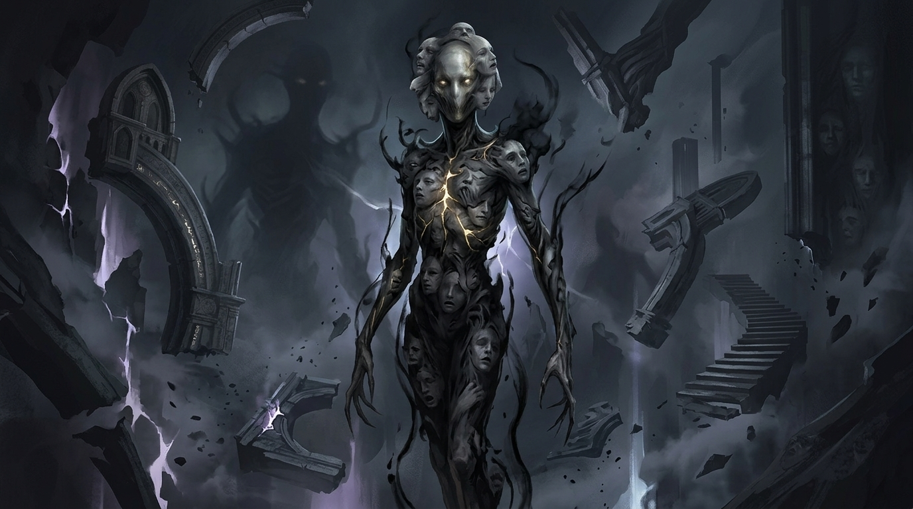
“Non siamo mai stati così vicini.” La figura attraversa lentamente una delle fratture.
“E voi siete tornati ancora una volta.”
La creatura supera il confine e raggiunge la sala. Per un istante il suo corpo sembra perdere consistenza, come se non riuscisse a sostenere
la propria presenza in quel luogo. Poi i frammenti che lo compongono si ricompongono, assumendo una forma più stabile. Davanti a voi non c'è più un
semplice Senzaeco. La sua figura è composta da innumerevoli identità consumate. I volti si alternano sulla sua superficie, alcuni sconosciuti,
altri appartenenti agli abitanti incontrati durante il vostro viaggio. Per un breve istante riconoscete persino i lineamenti di qualcuno
che avete conosciuto durante la spedizione. Poi il suo volto cambia ancora. Assume i tratti di uno di voi.
“Guardatevi. Avete attraversato questa città, avete raccolto i suoi ricordi e avete cercato di comprendere ciò che accadeva.
Ma non avete mai capito una cosa.” La creatura inclina leggermente la testa. “Aetheria non vi ha mai
condotti qui per salvarvi.” Le sue parole riecheggiano nella sala.
“Vi ha riportati al punto in cui tutto è cominciato. Ancora e ancora. Ogni volta che avete dimenticato,
la città vi ha ricondotti qui. Ogni volta che avete cercato una via d'uscita, vi ha mostrato una strada che vi avrebbe riportati al principio.”
Un sorriso si forma sul volto della creatura, ma non appartiene a nessuno dei volti che avete visto.
“E voi avete sempre seguito la strada.”
Il Senzaeco Primordiale solleva una mano. Le iscrizioni sulle pareti si illuminano violentemente, mentre la struttura del Sigillo comincia a tremare.
“Lasciate che si spezzi. Lasciate che il confine scompaia. Non ci sarà più una città a trattenervi, nessun ciclo da
ripetere, nessuna memoria da perdere.” La creatura si volta verso il Sigillo. “Noi non vogliamo più essere
prigionieri.” Poi torna a guardarvi. “E voi? Volete davvero continuare a proteggerli?”
La creatura si prepara ad attaccare.
Il Senzaeco Primordiale non è il Secondo Popolo nella sua interezza. È una sua manifestazione, una presenza che è riuscita a oltrepassare parzialmente il confine grazie al progressivo deterioramento del Sigillo. La sua comparsa dimostra quanto la situazione sia ormai grave. Non combatte soltanto per sopravvivere: vuole raggiungere il Sigillo e completarne la frattura, permettendo al Secondo Popolo di attraversare il confine.
Il combattimento deve essere impegnativo e rappresentare il culmine dell'avventura. Il Senzaeco Primordiale non dovrebbe essere sconfitto con facilità,
ma nemmeno diventare un ostacolo insuperabile. In generale, dovrebbe possedere una buona resistenza, attacchi capaci di mettere in difficoltà più personaggi e
alcune capacità legate alla manipolazione delle identità e delle percezioni.
Durante lo scontro, rivolgiti ai personaggi individualmente quando possibile. Puoi fare riferimento ai loro desideri, alle loro paure e ai rapporti che hanno
costruito durante l'avventura. Evita però di inventare ricordi o esperienze personali: utilizza soltanto elementi già emersi al tavolo.
Statistiche “Senzaeco Primordiale”
Volti rubati: la creatura assume temporaneamente i lineamenti di una persona conosciuta dai personaggi.
Può utilizzare la sua voce per distrarli, intimidirli o confonderli.
Voci sovrapposte: pronuncia contemporaneamente frasi differenti, alcune delle quali sembrano provenire dai ricordi dei personaggi.
Corpo mutevole: quando viene colpita, la sua forma si deforma e si ricompone, rendendo difficile comprenderne la vera anatomia.
Richiamo dell'Oltre: quando si avvicina al Sigillo, provoca un'intensa reazione nella struttura. Le fratture si
allargano e la sala viene attraversata da fenomeni innaturali.
Lo scontro non deve necessariamente concludersi con la morte della creatura. Se i personaggi riescono a respingerla, imprigionarla o interrompere la sua manifestazione, puoi considerare il confronto concluso. Se invece vengono sopraffatti puoi utilizzare il deterioramento del Sigillo per condurli verso un epilogo negativo.
Quando il Senzaeco Primordiale viene sconfitto o respinto, il pericolo immediato termina, ma il problema del Sigillo rimane. È importante che i personaggi comprendano questa distinzione: sconfiggere la creatura non significa aver salvato Aetheria. Il Secondo Popolo sta ancora indebolendo il confine dall'interno e il deterioramento del Sigillo non si arresta automaticamente.
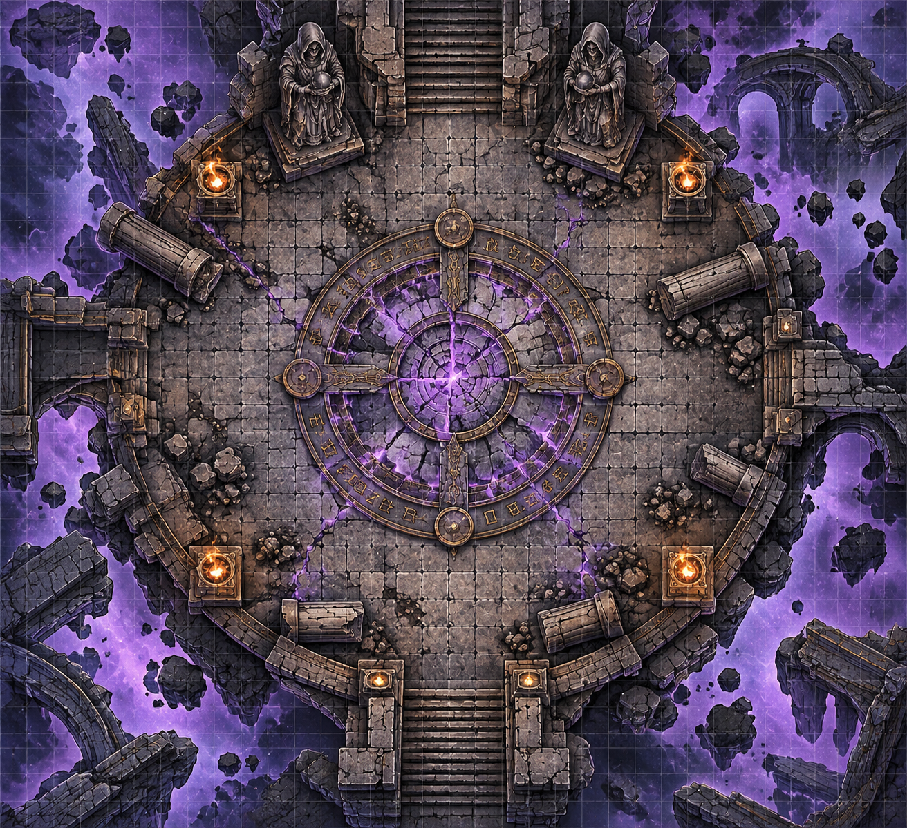
Mappa combattimento
Quando il Senzaeco Primordiale viene sconfitto, il suo corpo collassa su se stesso. I frammenti di volti si dissolvono uno dopo l'altro, lasciando cadere
sul pavimento una polvere scura che scompare prima ancora di toccare terra. Per alcuni istanti nella sala non si sente nulla. Poi il Sigillo emette un bagliore
intenso. Le crepe non scompaiono, ma la loro espansione si arresta. La struttura sembra riconoscere la vostra presenza. Sulle superfici di pietra affiorano
nuove iscrizioni, molto più antiche di quelle che avete trovato sulle pareti. Una voce, diversa da quella della creatura, attraversa la sala.
È la stessa voce che vi ha accompagnati fino a quel momento.
“La presenza è stata respinta. Ma il deterioramento continua.”
Le iscrizioni si illuminano lentamente.
“Il Sigillo non può essere ripristinato con ciò che avete portato fin qui. Non bastano le vostre conoscenze.
Non bastano le vostre intenzioni. Ciò che è stato sottratto deve essere restituito.”
Davanti a voi, sulla superficie della struttura, compaiono diverse incisioni. Ognuna sembra corrispondere a un elemento differente: un nome, un ricordo,
un volto, una promessa, un desiderio. La voce continua.
“Aetheria ha conservato ciò che avete dimenticato. Ma non può restituirvelo senza ripetere ciò che è già accaduto.”
Le incisioni cominciano a illuminarsi una dopo l'altra.
“Il ciclo può essere interrotto. Il Sigillo può essere stabilizzato. Ma non potete farlo senza rinunciare a qualcosa
che vi appartiene. Non qualcosa che possedete. Qualcosa che siete.”
“Se non siete disposti a perdere nulla, il ciclo continuerà. Se spezzerete il Sigillo, ciò che
attende oltre il confine sarà libero di attraversarlo.”
Il bagliore si attenua.
“Adesso potete scegliere.”
La sala rimane immobile. Davanti a voi si trovano il Sigillo e le sue fratture. Oltre la barriera, l'Oltre continua a premere contro il confine.
Ora sapete che esiste una possibilità diversa. Non è una soluzione che può essere ottenuta semplicemente combattendo. Non basta sconfiggere il nemico,
né trovare il modo di distruggere la struttura. Per interrompere il ciclo dovete restituire qualcosa di vostro. Il Sigillo sembra reagire alla vostra
presenza. Le incisioni si illuminano ogni volta che uno di voi si avvicina, mostrando immagini frammentarie: un volto amato, un luogo lontano,
una promessa pronunciata molto tempo prima, un sogno che sembrava irraggiungibile. Ognuno di voi riconosce qualcosa. Qualcosa che non vorrebbe perdere.
La voce parla un'ultima volta.
“Non vi chiederemo di dimenticare chi siete. Vi chiederemo di scegliere ciò che siete disposti a lasciare andare.
Non sarà una morte. Non sarà una punizione. Ma ciò che offrirete non tornerà a voi. Quando il Sigillo sarà completo, Aetheria non avrà più bisogno di
ricondurvi qui. Il ciclo terminerà. E voi potrete finalmente lasciare questa città.”
La luce si spegne lentamente. Per la prima volta da quando siete arrivati ad Aetheria, nessuna strada sembra indicarvi dove andare. La scelta appartiene
soltanto a voi.
Al termine dello scontro, i personaggi devono poter decidere liberamente come agire. Le tre possibilità principali sono le seguenti:
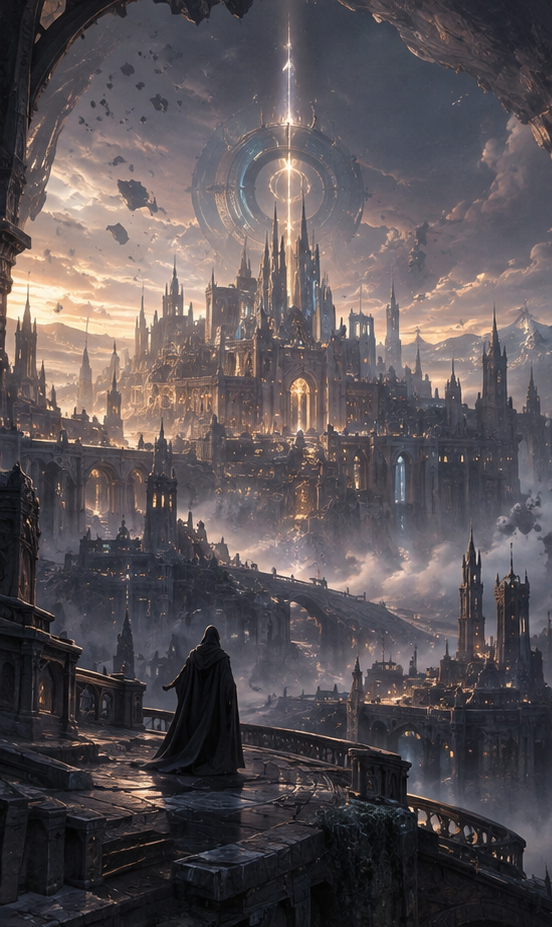
Il silenzio cala sulla camera. Il Sigillo continua a pulsare debolmente, attraversato da crepe che sembrano allargarsi a ogni battito.
Avete compreso cosa sarebbe necessario fare. Avete visto il prezzo della libertà, ma nessuno di voi è disposto a pagarlo. E forse, in fondo,
non potete biasimarvi. La voce torna a farsi sentire, distante e priva di emozione.
“Avete ricordato. Avete compreso. Eppure scegliete di non cambiare ciò che è stato.”
Le iscrizioni sulle pareti si spengono una dopo l'altra. La luce del Sigillo si affievolisce, mentre le crepe vengono lentamente inghiottite dall'oscurità.
“Allora tutto continuerà come prima.”
Un'improvvisa sensazione di vertigine vi attraversa. I vostri pensieri diventano confusi, i ricordi si sovrappongono e i volti dei vostri compagni
iniziano a perdere significato. Cercate di aggrapparvi a qualcosa, a un nome, a un'immagine, a una ragione per cui siete arrivati fin lì. Ma non rimane nulla.
Quando riaprite gli occhi, siete nuovamente davanti all'ingresso di Aetheria. La città si staglia davanti a voi, splendida e silenziosa, illuminata
da una luce che non riuscite a riconoscere. Non ricordate come siete arrivati, né cosa vi abbia spinto fin lì. Eppure, per un istante, avete la sensazione
di aver già vissuto quel momento.
A questo punto, il Master rilegge le prime righe dell'introduzione dell'Atto I, richiamando l'inizio dell'avventura e
creando un senso di ritorno al punto di partenza. La lettura segna la conclusione della storia: la sessione termina qui.
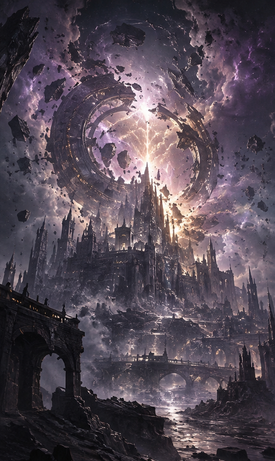
Il Sigillo si incrina sotto i vostri occhi. Le incisioni si illuminano un'ultima volta, prima di spezzarsi in una pioggia di frammenti
luminosi. Un boato attraversa la camera e le enormi strutture di pietra tremano, mentre il confine tra Aetheria e l'Oltre si lacera definitivamente.
Per un istante, tutto sembra fermarsi. Poi la pressione che da sempre gravava sulla città scompare. Le strade di Aetheria, le sue piazze e i
suoi palazzi sembrano liberarsi da un peso antico. Per la prima volta, la città non vi conduce verso una destinazione prestabilita.
Le sue vie non si ricompongono, i percorsi non si ripetono. Davanti a voi si apre una strada che non avete mai visto. Avete spezzato il ciclo.
Ma qualcosa, dall'altra parte, ha sentito il richiamo. Oltre la frattura, immense sagome si muovono nell'oscurità. Non riuscite a
distinguerne i contorni, né a comprendere quante siano. Alcune sembrano osservare la città, altre si avvicinano lentamente al varco.
La voce che vi aveva accompagnato fino a quel momento torna a farsi sentire, ma questa volta appare distante, quasi soffocata dal rumore dell'Oltre.
“Il confine è caduto.”
Non aggiunge altro. Una luce accecante invade la camera e vi costringe a chiudere gli occhi. Quando li riaprite, siete fuori da Aetheria.
Il passaggio è aperto e, per la prima volta, potete allontanarvi senza essere ricondotti indietro. Avete liberato la città dalla sua prigionia.
Avete interrotto il ciclo e restituito agli abitanti la possibilità di scegliere il proprio destino. Ma non sapete cosa avete lasciato entrare
nel mondo. E mentre vi allontanate, alle vostre spalle, qualcosa comincia a muoversi oltre il confine ormai spezzato.
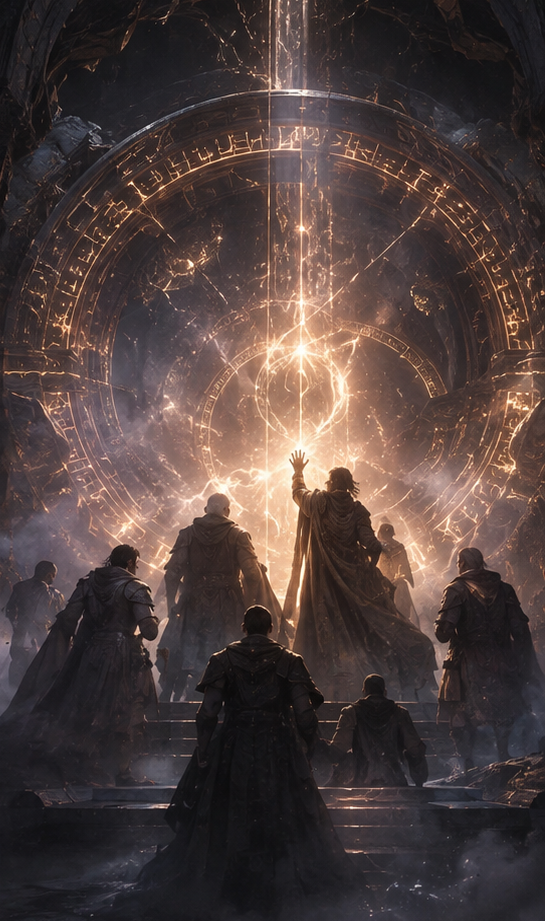
Uno alla volta, vi avvicinate al Sigillo. Ognuno di voi porta con sé qualcosa che ha scelto di abbandonare. Non si tratta di una
semplice rinuncia, né di un ricordo che potrà essere recuperato con il tempo. È una parte di voi, qualcosa che ha contribuito a rendervi
ciò che siete. Quando la decisione diventa definitiva, le iscrizioni sulle pareti cominciano a illuminarsi. Il Sigillo reagisce.
Una luce intensa si propaga lungo le sue incisioni, raggiungendo ogni frattura e ricomponendo lentamente le strutture danneggiate. Le ombre
che si agitavano oltre il confine si ritirano, mentre la presenza dell'Oltre diventa sempre più distante. La voce si manifesta un'ultima volta.
“Ciò che avete scelto di lasciare non sarà restituito. Ma ciò che avete salvato potrà continuare
a esistere”
Il silenzio avvolge la camera. Per la prima volta, il Sigillo non pulsa più in modo irregolare. La sua luce è stabile, le fratture sono
scomparse e il confine è tornato integro. Il Secondo Popolo rimane imprigionato oltre l'Oltre e il ciclo che vi aveva ricondotti ad Aetheria
si è finalmente interrotto. Le strade della città smettono di cambiare. I suoi abitanti non sono più trascinati verso la perdita dei propri
ricordi. Aetheria non ha più bisogno di ricondurre nessuno al Sigillo. Davanti a voi si apre un passaggio. Non è una strada che avete già
percorso, né un percorso che sembra riportarvi indietro. È una via d'uscita. Mentre la attraversate, sentite che qualcosa è cambiato.
Non riuscite più a richiamare ciò che avete sacrificato. Sapete che un tempo faceva parte di voi, ma il suo ricordo non esiste più.
Eppure siete ancora voi, ma voi non siete più gli stessi.
Il Master dovrebbe invitare i giocatori a creare personaggi adatti a un'avventura investigativa ed esplorativa, senza imporre particolari professioni, origini o archetipi. È preferibile che i personaggi si conoscano già e condividano una motivazione che li abbia spinti a intraprendere il viaggio.
Una volta completate le schede, il Master dovrebbe porre ai giocatori alcune domande aggiuntive, con l'obiettivo di raccogliere pochi elementi del loro
background che possano essere utilizzati durante l'avventura. Non è necessario richiedere storie elaborate o particolari dettagli biografici.
Sono sufficienti risposte brevi e spontanee, che permettano al Master di conoscere meglio i personaggi e individuare gli elementi personali
su cui Aetheria potrà fare leva nel corso della storia.
Hai completato la lettura di questa one-shot. Vuoi ricevere altre avventure pronte all'uso, risorse esclusive per Master e unirti a un tavolo attivo di creatori e giocatori?
 Ko-Fi
Ko-Fi
 YouTube
YouTube